Demystifying
Digital Logic
No memorization. No hand-waving. Just intuitive, step-by-step derivations that make the hardware click.
6-Variable K-Maps
Visualizing simplification in three dimensions — stacking glass cubes and playing Spot the Difference.
The Problem with 6 Variables ($A, B, C, D, E, F$)
A standard 4-variable K-Map is a simple 2D grid. But a 6-variable map has $2^6 = 64$ cells. Drawing this as a giant 2D grid breaks the physical adjacency rules of Gray Code. Instead, we draw it as FOUR separate 16-cell K-Maps arranged in a large 2x2 grid.
To keep the logic intact, we label the four maps using the highest-order variables $A$ and $B$ in Gray Code order (00, 01, 11, 10):
- Top-Left: $A=0, B=0$
- Top-Right: $A=0, B=1$
- Bottom-Right: $A=1, B=1$
- Bottom-Left: $A=1, B=0$
The 3D Glass Cubes Trick
Imagine these four maps aren't flat on paper, but are a 2x2 stack of transparent glass cubes. You can group cells normally within a single 16-cell map, but the real power comes from jumping between maps.
The Game of "Spot the Difference":
- If you have a group in the Left Map, and you see the exact same physical grouping in the Right Map, you can merge them into a massive 3D group! Because it exists when $B=0$ and $B=1$, the variable $B$ is completely eliminated.
- If you have the exact same group in all FOUR maps, you can group them all together, eliminating both $A$ and $B$ instantly!
⚠️ Warning: You CANNOT jump diagonally! The top-left map cannot group directly with the bottom-right map.
Example: A $2\times2$ group in the exact same physical spot across the $B=0$ and $B=1$ maps merges into a massive 3D Octet, eliminating variable $B$.
Reverse Engineering: Expanding Functions
If you're given a simplified equation and need to work backward to find the minterms, remember the 1 Unique Variable Trick.
Take a simplified term like $C'D'$. Notice that variables $A, B, E,$ and $F$ are missing. To expand it, you just branch out all possible combinations (0 and 1) for those missing variables. This directly reveals which exact physical cells in the 64-cell grid were grouped together to form that simplified term.
Detailed Example: Expand $F = C'D'$
- Identify missing variables: We have a 6-variable system ($A,B,C,D,E,F$). The term $C'D'$ is missing 4 variables ($A, B, E, F$).
- Calculate group size: Since 4 variables are missing, this term came from a massive group of $2^4 = 16$ cells.
- The Canonical Expansion Rule: Instead of guessing where the cells are visually, use pure boolean mathematics. Multiply the term by $(V + V') = 1$ for every missing variable $V$ to force it into pure minterms:
- 1. Expand A and B:
$C'D'(A+A')(B+B') = ABC'D' + AB'C'D' + A'BC'D' + A'B'C'D'$ - 2. Expand E and F:
Multiply all 4 new terms by $(E+E')(F+F')$ - 3. Result: 16 pure Minterms (e.g. $A'B'C'D'E'F' = 000000_2$)
- 1. Expand A and B:
- The Physical Reality: Converting those 16 minterms to binary gives you the exact cell numbers. When you map them on the grid, you'll see they perfectly correspond to the entire $CD=00$ column across ALL FOUR glass cube maps. No visual guesswork needed!
Carry Look-Ahead Adders
Deriving the Generate-Propagate equations from scratch — no memorization, pure logic.
The Problem with Ripple Carry
In a basic adder, each Full Adder has to wait for the previous one to calculate the carry out ($C_{out}$). This creates a massive time delay (a "ripple"). A Carry Look-Ahead Adder (CLA) solves this by calculating all carries simultaneously using pure parallel logic.
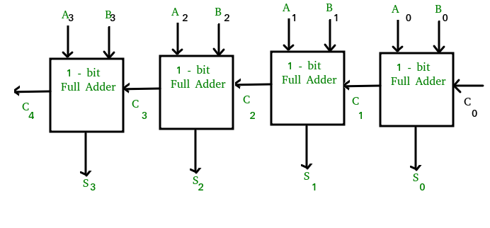
The "Cutting the Wires" Analogy
Look at the wire $C_3$ in the image above. Box 3 cannot do any math until it receives the electrical signal from $C_3$. But the $C_3$ wire doesn't have electricity until Box 2 finishes its math. And Box 2 has to wait for Box 1... and Box 1 has to wait for Box 0! The carry has to "ripple" through the physical wires one by one. This is agonizingly slow.
To fix this, hardware engineers do something drastic: They take scissors and cut wires $C_1, C_2,$ and $C_3$!
Instead of making the boxes wait for each other, they pull the internal Generate and Propagate signals out of the boxes and route them into a massive new "brain" sitting underneath the adders. This brain takes all inputs simultaneously, crunches the algebra instantly, and shoots electricity directly back into $C_1, C_2, C_3,$ and $C_4$ at the exact same time!
Here are the two magical internal signals we pull out for each bit $i$:
- Generate ($G_i = A_i \cdot B_i$): The bit column generates a carry all by itself (both inputs are 1).
- Propagate ($P_i = A_i \oplus B_i$): The bit column will pass along a carry if it receives one from the previous column.
$C_{i+1} = G_i + P_i \cdot C_i$
Deriving the Formulas (No Memorization!)
You never need to memorize the massive CLA equations. You just take the base formula and recursively substitute the previous carry!
Deriving $C_1$:
$C_1 = G_0 + P_0 \cdot C_{in}$
Deriving $C_2$:
$C_2 = G_1 + P_1 \cdot C_1$
Substitute $C_1$:
$C_2 = G_1 + P_1(G_0 + P_0C_{in}) = G_1 + P_1G_0 + P_1P_0C_{in}$
Deriving $C_3$:
$C_3 = G_2 + P_2 \cdot C_2$
Substitute $C_2$:
$C_3 = G_2 + P_2(G_1 + P_1G_0 + P_1P_0C_{in}) = G_2 + P_2G_1 + P_2P_1G_0 + P_2P_1P_0C_{in}$
Deriving $C_4$:
$C_4 = G_3 + P_3 \cdot C_3$
Substitute $C_3$:
$C_4 = G_3 + P_3(G_2 + P_2G_1 + P_2P_1G_0 + P_2P_1P_0C_{in})$
$C_4 = G_3 + P_3G_2 + P_3P_2G_1 + P_3P_2P_1G_0 + P_3P_2P_1P_0C_{in}$
Notice the beautiful pattern: Every term is just "Generate at the current bit" OR "Propagate from a previous generation". Since all $G$ and $P$ values are known immediately, the circuit calculates $C_4$ in just two gate delays (AND then OR)!
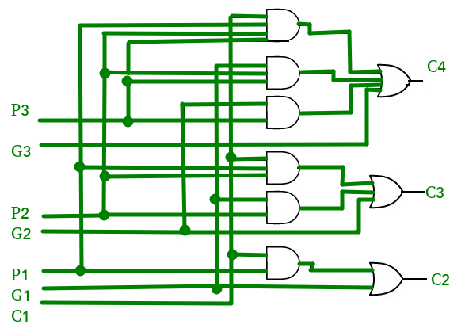
Above: The raw CLA hardware. The massive parallel AND gates (for P and G) feed directly into OR gates to produce $C_1, C_2, C_3,$ and $C_4$ simultaneously!
Two's Complement & Overflow
How a single XOR gate tells the CPU whether its math just broke — and why video games used to crash.
The Proof: Why is $-B = \overline{B} + 1$?
This is one of the most beautiful proofs in computer science! It ties pure mathematics directly to the physical limitations of a motherboard.
- The Wall of 1s: If you add a binary number $B$ to its exact opposite $\overline{B}$, you always get a solid wall of 1s. For example:
0101 + 1010 = 1111. So universally: $B + \overline{B} = 1111$. - Convert to Decimal: In an $n$-bit system, a solid wall of 1s is equal to $2^n - 1$. Let's rewrite our law with algebra:
$B + \overline{B} = 2^n - 1$ - A Little Algebra: Let's rearrange to isolate $-B$. Subtract $B$ from both sides, then add $1$ to both sides.
$\overline{B} + 1 = 2^n - B$ - The Hardware Magic Trick: In a 4-bit computer, $2^4 = 16$. In binary, 16 is
1 0000(a 5-bit number!). But the chip physically only has 4 wires. When it tries to hold1 0000, the 5th bit physically falls off the edge of the chip and disappears! Because it's destroyed, the 4 wires just read0000. So in hardware reality: $2^n = 0$. - The Final Substitution: Plug that hardware reality ($2^n=0$) back into our algebra equation:
$-B = \overline{B} + 1$
By exploiting the fact that computer chips have a limited number of wires and will naturally drop overflowing bits, engineers figured out how to do subtraction without ever having to invent subtraction logic gates!
Overflow: When Games Crash
It absolutely will cause errors if the math you try to do exceeds the physical capacity of the chip (like adding $5 + 4$ in a 4-bit system, which wraps around to $-7$). But how does the CPU know the difference between "good" overflow (from our subtraction trick) and "bad" overflow (a catastrophic math error)?
The Overflow Flag ($V$)
The CPU watches the final sign bit (the MSB) with a single XOR gate. It checks two things: did a carry go INTO the sign bit, and did a carry fall OUT of it?
$V = C_{in} \oplus C_{out}$
- $V = 0$: The carry IN is the same as the carry OUT. The CPU says: "This is the 'good' overflow from subtraction. The math is perfectly valid. Ignore the dropped bit."
- $V = 1$: The carry IN is different from the carry OUT. The CPU panics: "ARITHMETIC OVERFLOW! The numbers were too big!"
When that Overflow Flag hits $1$, the CPU immediately throws an exception to the OS—which is exactly why classic video games (like Pac-Man's infamous kill screen or Civilization's Nuclear Gandhi) used to crash or glitch when a score got too high and exceeded memory limits!
Sequential Logic & Flip-Flops
Mastering the SR, D, JK, and T flip-flops, and how to convert between them mathematically.
1. The SR (Set-Reset) Flip-Flop
This is the foundational logic memory element. While simple, it has a critical flaw: the indeterminate/invalid state when both inputs are driven high.
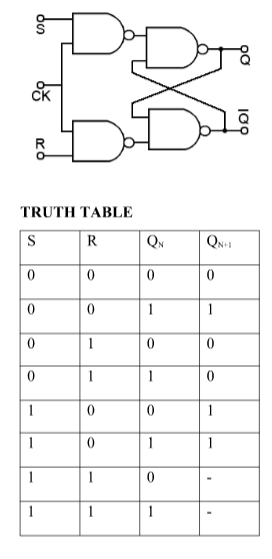
| S | R | State ($Q_{N+1}$) |
|---|---|---|
| 0 | 0 | Hold (No change, remains $Q_N$) |
| 0 | 1 | Reset (Forces $Q$ to 0) |
| 1 | 0 | Set (Forces $Q$ to 1) |
| 1 | 1 | Invalid (Forbidden state) |
2. The D (Data) Flip-Flop
The D flip-flop is essentially an SR flip-flop with an inverter connected between the inputs. This guarantees that both inputs are never 1 at the same time, completely eliminating the invalid state problem.
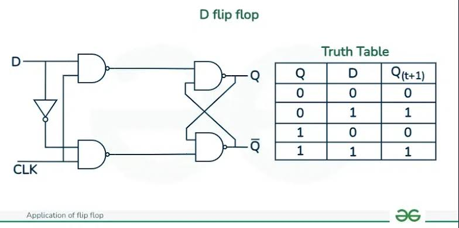
- It acts as a "delay" or "data" buffer.
- Whatever logic level is present at the D input passes through to the Q output when the clock pulse triggers.
- When D = 0: Q becomes 0 (Reset state).
- When D = 1: Q becomes 1 (Set state).
3. The JK Flip-Flop
The JK flip-flop was designed to solve the "indeterminate" state issue of the SR flip-flop. By using feedback from the outputs (Q and Q') back into the input NAND gates, it creates a predictable "toggle" state.
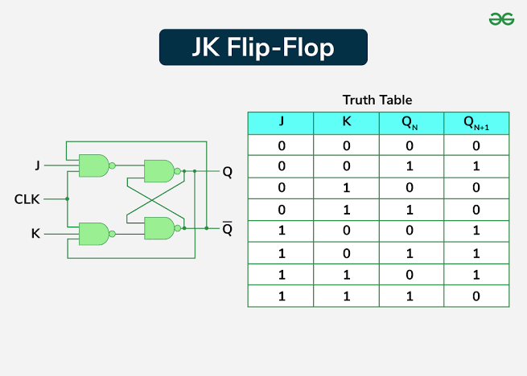
| J | K | State ($Q_{N+1}$) |
|---|---|---|
| 0 | 0 | Hold (No change) |
| 0 | 1 | Reset (Forces $Q$ to 0) |
| 1 | 0 | Set (Forces $Q$ to 1) |
| 1 | 1 | Toggle (Flips state) |
The Race Around Condition (Logical Breakdown)
The Problem: Occurs in a level-triggered JK flip-flop when $J=1, K=1$ (toggle mode). Because the clock pulse width ($t_w$) is typically larger than the propagation delay of the flip-flop ($t_{pd}$), the output $Q$ will toggle ($0 \rightarrow 1 \rightarrow 0 \rightarrow 1...$) uncontrollably multiple times while the clock remains HIGH. When the clock goes LOW, the final state of $Q$ is unpredictable.
How is it eliminated?
- 1. Master-Slave Configuration (Most Common): Two flip-flops cascaded.
Step-by-step logic:
• Master is positive level-triggered. Slave is negative level-triggered (via an inverted clock).
• When CLK=1: Master evaluates inputs and updates its internal state. The Slave is disabled, locking final output Q. Since Q doesn't change yet, there's no feedback race!
• When CLK=0: Master is disabled (locking its state). Slave is enabled and copies the Master's state to the final output Q.
Because the final output only updates when the clock falls, the feedback loop is broken. - 2. Edge-Triggering: Make the flip-flop sensitive only to the exact instant the clock transitions (e.g., LOW to HIGH). This gives the flip-flop only enough time to toggle exactly once per cycle.
- 3. Pulse-Narrowing: Artificially ensure the clock pulse width ($t_w$) is less than the propagation delay ($t_{pd}$) so it only has time to toggle once.
Master-Slave JK Flip-Flop Circuit with Preset & Clear
Below is the conceptual block diagram and detailed schematic of a Master-Slave JK Flip-Flop, complete with active-low asynchronous Preset ($\overline{PRE}$) and Clear ($\overline{CLR}$) overrides.
High-Level Block Diagram
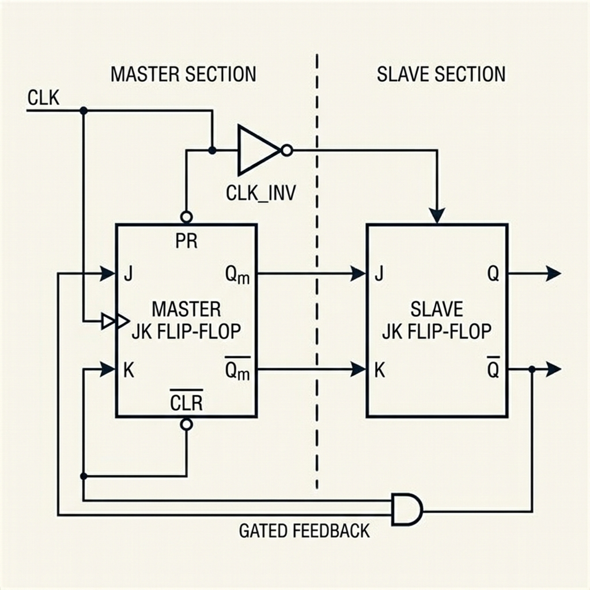
Detailed NAND Gate Schematic
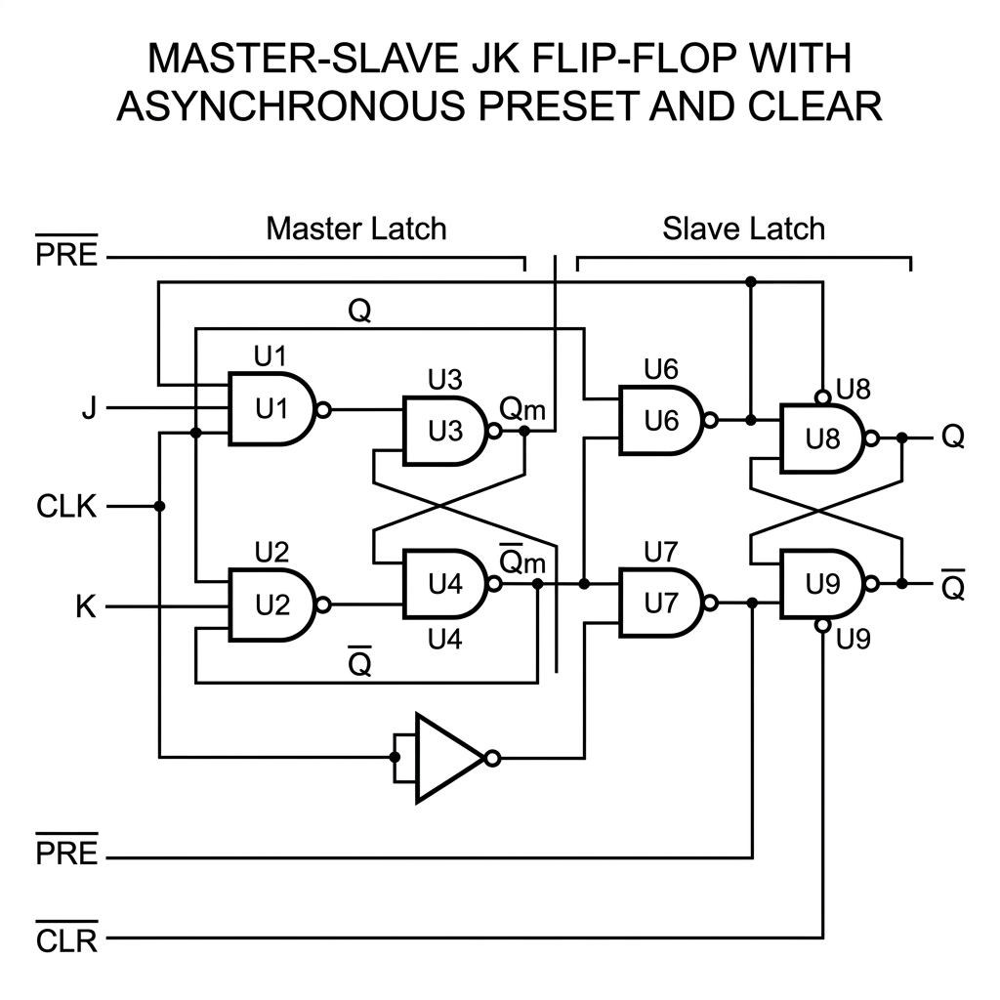
Circuit Mapping & Construction
- 1. The Master Latch (Left Side): Built using two 3-input NAND gates at the very front. These capture inputs $J$, $K$, $CLK$, and the feedback signals from the final outputs ($Q$ and $\overline{Q}$). These gates then feed directly into a standard SR latch (two cross-coupled 2-input NAND gates).
- 2. The Clock Inverter (Middle): A single NAND gate with its inputs tied together acts as a NOT gate. It inverts the incoming $CLK$ signal, creating the essential clock delay between the Master and Slave stages to prevent racing.
- 3. The Slave Latch (Right Side): Composed of two NAND gates triggered by the inverted clock. These gates push data into the final cross-coupled NAND latch, which holds the final outputs $Q$ and $\overline{Q}$.
- 4. Asynchronous Overrides ($\overline{PRE}$ & $\overline{CLR}$):
• The active-low $\overline{PRE}$ line connects to the top NAND gate of the final Slave latch (forcing $Q$ to 1 when active).
• The active-low $\overline{CLR}$ line connects to the bottom NAND gate of the final Slave latch (forcing $\overline{Q}$ to 1 when active).
Operational Truth Table
Because $\overline{PRE}$ and $\overline{CLR}$ are "active low," applying a 0 activates them immediately, overriding the clock and the $J$/$K$ inputs entirely.
| $\overline{PRE}$ | $\overline{CLR}$ | CLK | J | K | $Q_{n+1}$ | $\overline{Q}_{n+1}$ | Mode |
|---|---|---|---|---|---|---|---|
| 0 | 1 | X | X | X | 1 | 0 | Async Set (Preset) |
| 1 | 0 | X | X | X | 0 | 1 | Async Reset (Clear) |
| 0 | 0 | X | X | X | 1 | 1 | Invalid / Race |
| 1 | 1 | ↓ | 0 | 0 | $Q_n$ | $\overline{Q}_n$ | Hold (No Change) |
| 1 | 1 | ↓ | 0 | 1 | 0 | 1 | Sync Reset |
| 1 | 1 | ↓ | 1 | 0 | 1 | 0 | Sync Set |
| 1 | 1 | ↓ | 1 | 1 | $\overline{Q}_n$ | $Q_n$ | Toggle |
📝 Exam Guide: How to Draw the Master-Slave JK Diagram
Step 1: Draw the Twin Blocks side-by-side
Start by drawing two standard flip-flop boxes. Label the first one MASTER and the second one SLAVE. Give the Master block inputs for J, K, and CLK, and outputs for Q and $\overline{Q}$. Give the Slave block inputs for J, K, and CLK, and outputs for Q and $\overline{Q}$.
Step 2: Wire the Center (Master to Slave)
The internal outputs of the Master block feed directly into the inputs of the Slave block like a straight bridge:
• Draw a line straight from the Master's Q output to the Slave's J input.
• Draw a line straight from the Master's $\overline{Q}$ output to the Slave's K input.
Step 3: Wire the Inverse Clock
Because it is a master-slave configuration, the two blocks cannot listen at the same time. One must get an inverted clock.
• Draw an external pin labeled CLK.
• Run a line from this CLK pin straight into the Master's clock input.
• Tap into that same line, pass it through a NOT gate (inverter), and connect the output of that inverter to the Slave's clock input.
Step 4: Wire the Outer Feedback Loops
This is the part that converts a standard latch behavior into a functional JK flip-flop. The final outputs must wrap all the way back to the Master's inputs:
• Take a line from the final Q output of the Slave block, drag it all the way back to the front, and connect it to the Master's K input line.
• Take a line from the final $\overline{Q}$ output of the Slave block, drag it back to the front, and connect it to the Master's J input line.
Step 5: Add the Asynchronous Pins ($\overline{PR}$ and $\overline{CLR}$)
Since the prompt specifically asked for active-low preset and clear, you must add bubbles to the lines entering the blocks:
• Draw an external line labeled $\overline{PR}$. Draw a tiny circle (bubble) where it enters the bottom or top of the Master block.
• Draw an external line labeled $\overline{CLR}$. Draw a tiny circle (bubble) where it enters the bottom or top of the Master block.
(Note: In textbook master-slave diagrams, preset and clear are typically applied to the Master stage box to steer the initial state before it cascades to the slave).
- Two separate blocks cleanly labeled Master and Slave.
- A NOT gate placed on the clock line going strictly between the two clock inputs.
- Criss-crossed feedback loops connecting the final outputs back to the Master inputs.
- Inversion bubbles clearly visible on the $\overline{PR}$ and $\overline{CLR}$ lines.
4. The T (Toggle) Flip-Flop
The T flip-flop is essentially a JK flip-flop where J and K are tied together into a single input called T. It is primarily used in counters and frequency dividers.
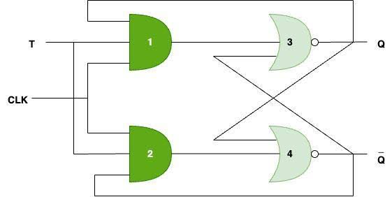
| T | $Q_N$ | $Q_{N+1}$ | State |
|---|---|---|---|
| 0 | 0 | 0 | Hold |
| 0 | 1 | 1 | Hold |
| 1 | 0 | 1 | Toggle |
| 1 | 1 | 0 | Toggle |
The XOR Connection: CLA & Flip-Flops
When you want a D flip-flop to behave like a T flip-flop, you feed the Data input ($D$) through an XOR gate taking the Toggle input ($T$) and the current state ($Q_n$):
$D = T \oplus Q_n$
In this circuit, the XOR gate is acting as a conditional inverter. If $T=1$, it flips the state; if $T=0$, it passes it through unchanged.
The exact same logic appears in the Carry Look-Ahead Adder!
Just like $T$ decides if the flip-flop state toggles, the $P_i$ term in a CLA (which is an XOR of the two inputs) decides if the carry-in ($C_i$) will toggle the final Sum bit.
$P_i = A_i \oplus B_i \quad \text{and} \quad S_i = P_i \oplus C_i$
Converting SR to D Flip-Flop
Here is the formal procedure to find the Boolean expressions for our Available Inputs ($S$ and $R$) in terms of our Desired Input ($D$) and current state ($Q_n$).
| Current State ($Q_n$) | Desired Input ($D$) | Required $S$ | Required $R$ |
|---|---|---|---|
| 0 | 0 | 0 | X |
| 0 | 1 | 1 | 0 |
| 1 | 0 | 0 | 1 |
| 1 | 1 | X | 0 |
Plotting the K-Maps for $S$ and $R$ gives us the final logical expressions. We group the 1s and Xs, causing the $Q_n$ variables to cancel out:
$S = D \quad \text{and} \quad R = \overline{D}$
This means we wire the circuit by feeding $D$ directly into $S$, and inverted $D$ into $R$.
Converting D to T Flip-Flop
The rule for a D flip-flop is that the required $D$ input must be exactly the same as the Next State ($Q_{n+1}$). To act like a T flip-flop, we apply the T rules to figure out the Next State before we determine $D$:
- T = 0 (Hold): Next State is the same as $Q_n$.
- T = 1 (Toggle): Next State is the opposite of $Q_n$.
| Current State ($Q_n$) | Desired Input ($T$) | Next State ($Q_{n+1}$) | Required Available ($D$) |
|---|---|---|---|
| 0 | 0 (Hold) | 0 | 0 |
| 0 | 1 (Toggle) | 1 | 1 |
| 1 | 0 (Hold) | 1 | 1 |
| 1 | 1 (Toggle) | 0 | 0 |
Notice that the Required $D$ column matches the truth table for an XOR gate ($T \oplus Q_n$). That's why $D = T \oplus Q_n$ perfectly converts a D flip-flop into a T flip-flop!
🏆 Boss Fight: Designing a Custom X-Y Flip-Flop
Now for the ultimate test: deriving the exact hardware logic needed to force a standard T Flip-Flop to behave like a custom X-Y Flip-Flop. You set up the battlefield perfectly with a K-map for $T$, mapping $Q_n$ on the rows and the inputs $XY$ on the columns.
The X-Y K-Map
We map the required 1s into our grid. Notice the column order (00, 01, 11, 10)—that's the classic Gray code layout essential for K-maps.
| $Q_n$ \ $XY$ | 00 | 01 | 11 | 10 |
|---|---|---|---|---|
| 0 | 1 | 0 | 0 | 1 |
| 1 | 1 | 1 | 0 | 0 |
Grouping for the Kill
To get the most minimized expression, we need to find the biggest, most efficient loops. There are two essential pairs here:
- The Bottom Pair (Row 1, Cols 00 and 01): We loop the 1 at 00 and the 1 at 01.
$Q_n$ is 1. $X$ stays 0. $Y$ changes, so it cancels out.
Result: $\overline{X}Q_n$ - The Wrap-Around Pair (Row 0, Cols 00 and 10): We loop the 1 on the far left with the 1 on the far right (remember, K-maps fold like a cylinder!).
$Q_n$ is 0. $Y$ stays 0. $X$ changes, so it cancels out.
Result: $\overline{Y}\overline{Q_n}$
(Note: You might be tempted to loop the vertical pair in the 00 column, but that's redundant! Our first two groups already covered all the 1s, so adding a third group just adds unnecessary hardware.)
Boss Defeated: Final Hardware Logic
Combine those two groupings, and you get the exact hardware logic needed to force a standard T Flip-Flop to behave like our custom X-Y Flip-Flop:
$T = \overline{X}Q_n + \overline{Y}\overline{Q_n}$
Mission Accomplished!
You just successfully designed a completely custom sequential memory unit from scratch! You've got the generic rules locked down. You know how to isolate Desired vs. Available, build the master table row by row, and map it to the logic gates. CJ Sir would be incredibly proud!
Registers & Counters
Scaling up flip-flops to store multiple bits of data, shift information, and divide frequencies.
1. Registers & Shift Registers
A single flip-flop stores exactly one bit (a 1 or a 0). To store larger pieces of information, we connect multiple flip-flops in series. This grouped device is called a Register.
When we need to move that stored data around, we use a Shift Register. By applying clock pulses, the stored bits can be shifted left or right, moving in and out of the register.
The 4 Types of Shift Registers
- SISO (Serial In, Serial Out): Data goes in one bit at a time, comes out one bit at a time.
- SIPO (Serial In, Parallel Out): Data goes in sequentially, but can be read all at once.
- PISO (Parallel In, Serial Out): Data is loaded instantly, but comes out sequentially.
- PIPO (Parallel In, Parallel Out): Data is loaded instantly and read instantly.
2. Counters & Frequency Division
A Counter is a specialized register designed specifically to count the number of clock pulses that have occurred. Because it counts pulses, it inherently acts as a Frequency Divider Circuit (e.g., dividing a fast clock signal into a slower one).
Maximum States ($2^n$)
If a counter is built using $n$ flip-flops, the absolute maximum number of states it can hold is $2^n$. For example, 3 flip-flops give a maximum of 8 states (0 to 7).
The MOD Number
The MOD (Modulus) is the actual number of states used by the counter. A counter can be designed to reset early, meaning:
$\text{MOD} \le 2^n$
3. Synchronous vs. Asynchronous Counters
| Asynchronous (Ripple) Counters | Synchronous Counters |
|---|---|
| Slower. The clock pulse ripples through one flip-flop to the next, causing propagation delays. | Faster. A universal clock pulse triggers all flip-flops simultaneously. |
| Limited. Can only count strictly Up or Down. | Versatile. Can count Up, Down, Random patterns, and specialized shifts (like Ring or Johnson counters). |
Example: 3-Bit Asynchronous (Ripple) Counter
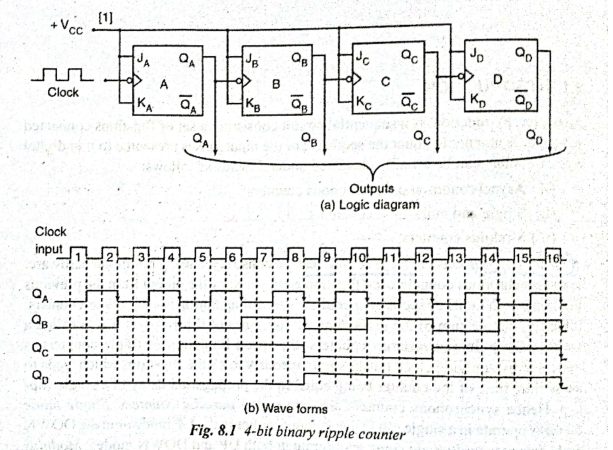
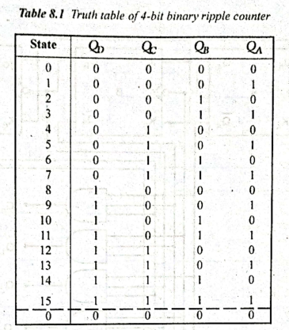
Logic Families & IC Specs
Understanding the electrical characteristics of CMOS, voltage levels, noise margins, and propagation delay.
1. Voltage Levels & Logic States
Digital circuits interpret electrical voltage as logical `1`s and `0`s. However, reality isn't perfect, so engineers define specific threshold ranges:
- $V_{OH(min)}$: The minimum voltage level at an output to guarantee a logical 1 state.
- $V_{OL(max)}$: The maximum voltage level at an output to guarantee a logical 0 state.
- $V_{IH(min)}$: The minimum voltage required at an input to be recognized as a 1.
- $V_{IL(max)}$: The maximum voltage required at an input to still be recognized as a 0.
Noise Margin
Noise margin is the buffer zone between output voltage and required input voltage. It guarantees that tiny electrical fluctuations (noise) won't accidentally flip a 0 to a 1!
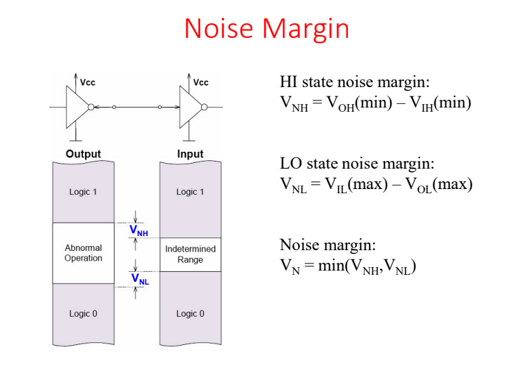
2. CMOS Logic Advantages
Most modern computer chips are built using CMOS (Complementary Metal-Oxide-Semiconductor) technology. It completely dominates NMOS for several reasons:
- Extremely large fan-out capability (>50).
- Lowest power dissipation of all gates (a few nW).
- Very high noise immunity and margin.
- Directly compatible with older TTL gates.
- Lower propagation delay and higher speed than NMOS.
- Only a single power supply ($+V_{DD}$) required.
- Excellent temperature stability.
- Low-voltage (1.5 V) chips are available.
⚠️ Warning: Static Charge
MOS chips must be protected from acquiring static charges by keeping the leads shorted. Static charges acquired in leads will instantly destroy the chip! (Modern chips rectify this with built-in protective circuits).
3. Physical Limitations: Delay & Fan-Out
Fan-In & Fan-Out
Fan-In is the maximum number of inputs a single logic gate can practically support without degrading the input voltage level.
Fan-Out is the maximum number of digital inputs that the output of a single logic gate can feed safely. If you exceed the manufacturer's specified Fan-Out load, the circuit malfunctions because it cannot supply the demanded power!
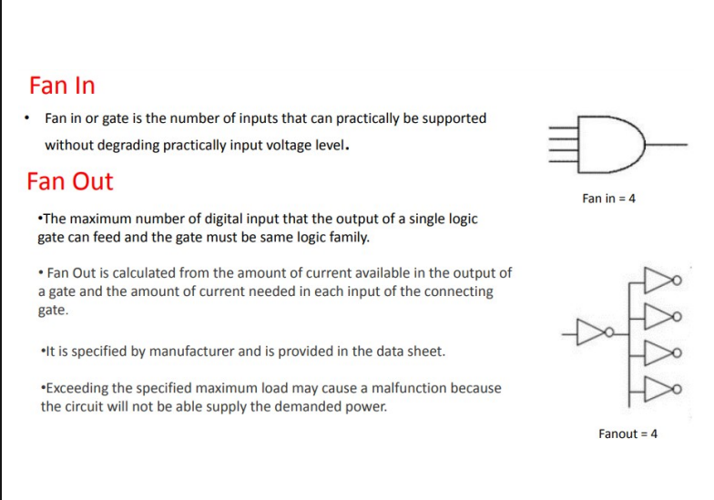
Propagation Delay
The exact measure of how long it takes for a gate's output to physically change state after its input changes.
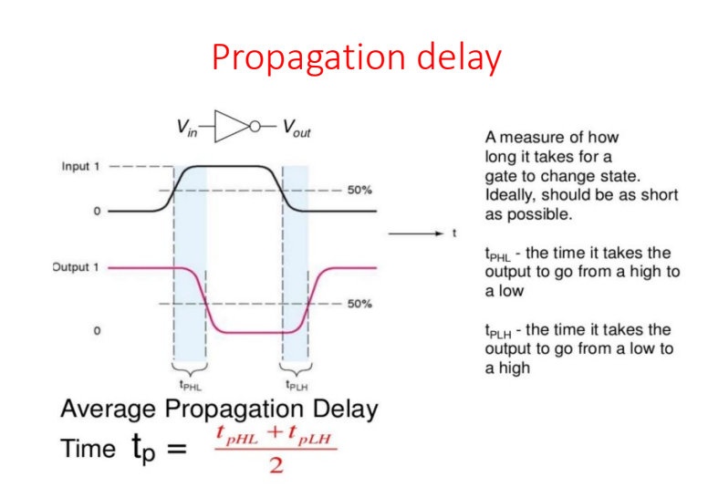
Memory & Programmable Logic
Understanding RAM, ROM, addressing schemes, and memory capacity calculations.
1. Introduction to Memory Types
There are two primary types of memory used in digital systems:
Random-Access Memory (RAM)
Volatile memory that can perform both write and read operations at high speeds.
Read-Only Memory (ROM)
Non-volatile memory that performs only read operations. ROM is inherently a Programmable Logic Device (PLD).
Other programmable logic units include the PLA (Programmable Logic Array), PAL (Programmable Array Logic), and FPGA (Field-Programmable Gate Array).
2. The Memory Unit
A memory unit stores binary information in groups of bits called words. Communication with the memory unit happens via three specific channels:
- Data Lines: Input and Output lines for the actual binary data.
- Address Selection Lines: Identifies which specific word is being accessed.
- Control Lines: Specifies the direction of transfer (Read vs. Write).
Block Diagram of a Memory Unit
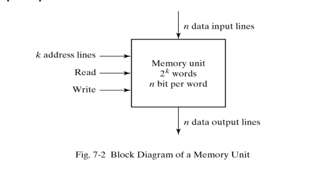
3. Addressing & Capacity
Each word in memory is assigned a unique identification number called an address. The addresses start from $0$ up to $2^k - 1$, where $k$ is the number of address lines available.
Standard Terminology
- 1 Byte = 8 bits
- 1 Word = 2 bytes (16 bits)
Calculating Memory Capacity
The number of words in a memory block is denoted by letters based on powers of 2:
- K (Kilo) = $2^{10}$ $\rightarrow$ Example: $64\text{K} = 2^6 \times 2^{10} = 2^{16}$ words
- M (Mega) = $2^{20}$ $\rightarrow$ Example: $2\text{M} = 2^1 \times 2^{20} = 2^{21}$ words
- G (Giga) = $2^{30}$ $\rightarrow$ Example: $4\text{G} = 2^2 \times 2^{30} = 2^{32}$ words
4. Write & Read Operations
To interact with the memory unit, the CPU must follow strict sequential steps.
Transferring IN (Write)
- Apply the binary address of the desired word to the address lines.
- Apply the data bits that must be stored to the data input lines.
- Activate the write input.
Transferring OUT (Read)
- Apply the binary address of the desired word to the address lines.
- Activate the read input.
(The memory unit will push the requested word to the data output lines).
5. Ground Level: What Does Verilog Code Actually Mean?
In Verilog (a Hardware Description Language), memory is just a massive 2D array—think of it as a giant, physical bookshelf. When you see a line of code like this:
reg [15:0] memword[0:1023];
Here is the plain English breakdown:
[0:1023]: This tells the computer to build exactly 1,024 shelves. Each shelf represents a specific "address".[15:0]: This tells the computer that every single one of those shelves is designed to hold a box exactly 16 bits wide (a "word").
So, the code simply says: "Build me a bookshelf with 1024 slots, where each slot holds a 16-bit number."
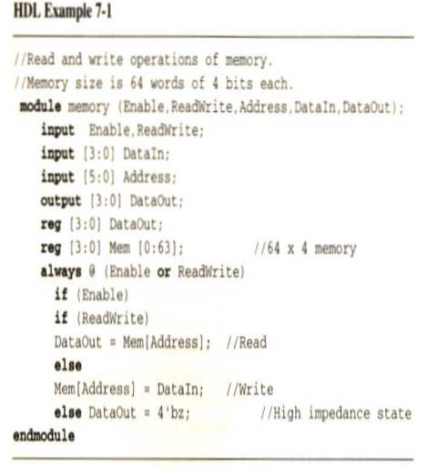
Line-by-Line Verilog Memory Breakdown
The Setup
//Read and write...&//Memory size...: Comments (ignored by the computer). They leave a note for the human reader.module memory (Enable,ReadWrite,Address,DataIn,DataOut);: Creates a new hardware block (like a blank microchip) namedmemory. The items in parentheses are the physical "pins" connecting it to the outside world.
The Inputs and Outputs (The Pins)
input Enable, ReadWrite;: Single-wire inputs.Enableacts as the master on/off switch.ReadWriteis the toggle telling the chip whether to read or write.input [3:0] DataIn;: A 4-bit wide input bus (wires 3, 2, 1, and 0) for the data you want to save.input [5:0] Address;: A 6-bit wide input bus. 6 bits can represent exactly 64 values (0 to 63), matching the 64 memory slots perfectly.output [3:0] DataOut;: A 4-bit wide output bus to push the requested data back out.reg [3:0] DataOut;: In Verilog, if an output is assigned a value inside analwaysblock, it must be declared as areg(register) to hold its state.
The Actual Memory
reg [3:0] Mem [0:63];: The core of the snippet! This tells the computer to build exactly 64 slots ([0:63]), and makes sure each is 4 bits wide ([3:0]).
The Logic (The Brains)
always @ (Enable or ReadWrite): Watch theEnableandReadWritepins. If either changes, trigger the logic below.if (Enable): Is the master switch turned on? If yes, proceed.if (ReadWrite) DataOut = Mem[Address]; //Read: If high (1), go toAddress, grab the 4-bit word, and copy toDataOut.else Mem[Address] = DataIn; //Write: If low (0), take the 4-bit word fromDataInand save it ontoAddress.else DataOut = 4'bz; //High impedance state: IfEnableis off (0), output is4'bz. 'Z' means "High Impedance"—it physically disconnects the output pins so they don't leak electricity or interfere.endmodule: The design for this specific chip is finished!
6. Timing Rules (The "Relay Race" of Memory)
Writing or reading memory is a physical process, meaning it takes actual time for electricity to move. Imagine the CPU and memory are running a very strict relay race. Here is why the rules exist:
- Wait for Address Stability: Why do we wait for the address to stabilize before shouting "Write!"? Because electricity doesn't settle instantly. If you send the "Write" command while the address signal is still bouncing between 0 and 1, you might accidentally blast data into a random, innocent memory slot and destroy it! Let the address settle first.
- The 50ns Hold Rule: You cannot just "flash" the write signal. Hardware is relatively slow. You must physically hold the electrical voltage high for at least 50 nanoseconds so the memory unit has enough time to register the action.
- The Falling Edge of $T_3$: During a read cycle, the CPU waits until the $3^{\text{rd}}$ clock cycle ($T_3$) ticks down (negative transition). That exact moment is when the CPU reaches its hand out to grab the data from the memory bus.
Write Cycle
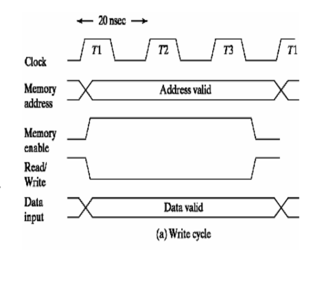
Read Cycle
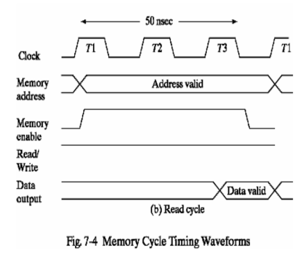
7. Random Access vs. Sequential Access
| Random-Access Memory (RAM) | Sequential-Access Memory |
|---|---|
| Separated in space. Each word occupies one specific, unique physical location in the grid. | Time-dependent medium. Data is written along a continuous track (like magnetic disk or tape). |
| Constant Access Time. It takes the exact same amount of time to retrieve a word, regardless of its location. | Variable Access Time. The time required depends on the distance between the reading head and the data's physical location on the tape/disk. |
Deep Dive: RAM & Decoding
Understanding SRAM vs DRAM, Memory Cells, and Address Multiplexing.
1. SRAM vs DRAM (The Whiteboard vs The Leaky Bucket)
Not all RAM is built the same. There are two major architectures used to store binary data, and they trade off speed for capacity.
Static RAM (SRAM)
Built using internal latches (like the flip-flops we learned about). Think of it like a whiteboard: once you write a "1" on it, it stays there forever (as long as the power is on).
- High Speed (shorter read/write cycles)
- Easy to use
- Low density & Low capacity
- High cost & High power consumption
Dynamic RAM (DRAM)
Built using MOS transistors acting as capacitors. Think of it like a leaky bucket of water. To keep a "1" stored, you have to constantly refill the bucket before it empties. This is called refreshing.
- Requires periodic refreshing
- High density & High capacity (massive storage in a single chip!)
- Low cost & Low power consumption
- Slower speed
⚠️ Volatile vs. Nonvolatile
Both SRAM and DRAM are Volatile. If you unplug the power cable, all the latches reset and all the capacitors drain. The memory is wiped clean. Nonvolatile memory (like a Magnetic Disk or ROM) retains its data even when the power is entirely removed.
2. Memory Decoding (Finding the Right Shelf)
How does the computer actually pick the specific word out of thousands? It uses Decoders. But first, let's look at the absolute smallest piece of memory: a single Binary Cell.
The Binary Cell (BC) is essentially an S-R Latch wrapped in AND gates to control when it is allowed to Read or Write based on the Select line.
- If Read/Write = 0 & Select = 1: Input data flows into the S-R latch.
- If Read/Write = 1 & Select = 1: Stored data flows out of the S-R latch.
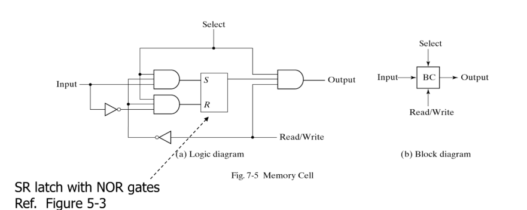
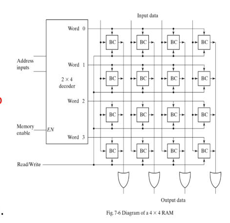
The $k \times 2^k$ Decoder
If we want to build a memory with $2^k$ words (like the 4x4 RAM shown left), we need a decoder with $k$ inputs. The decoder takes the binary address and activates precisely one output line, which triggers the Select pin for that entire row of Binary Cells.
During a Read operation, all the cells in that activated row dump their bits into the OR gates at the bottom to form the final Output Word.
3. Coincident (2D) Decoding (The Battleship Strategy)
There is a massive physical problem with standard decoders. If you build a 1K-word memory ($1024$ slots), you need a $10 \times 1024$ decoder. That requires 1,024 massive AND gates inside the chip. That is terribly inefficient.
The Solution: Arrange the memory in a 2D Grid (like the game Battleship!).
Instead of one massive list of 1024 words, we arrange them in a $32 \times 32$ grid. Now, we just need one $5 \times 32$ decoder for the Rows ($X$), and a second $5 \times 32$ decoder for the Columns ($Y$).
By intersecting the Row and Column lines, we activate the exact memory slot. This dramatically reduces the number of logic gates required inside the chip!
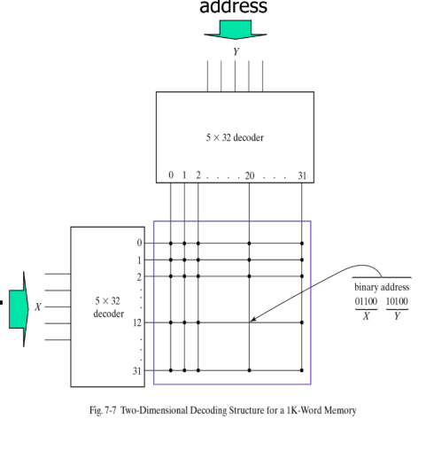
4. Address Multiplexing (Saving Physical Pins)
Because DRAM is so dense (4x the density of SRAM and 4x cheaper!), it can hold massive amounts of data. But massive data requires a massive Address. If you need a 16-bit address, you'd normally need 16 physical metal pins poking out of the IC package. We want to shrink the chip size, so we use Address Multiplexing.
- Instead of sending all 16 bits at once, we chop the address in half and send it through just 8 physical pins.
- Step 1: The CPU sends the first 8 bits (the Row Address) down the wires. The RAS (Row Address Selection) signal tells the chip to grab these 8 bits and save them in the Row Register.
- Step 2: The CPU sends the remaining 8 bits (the Column Address) down the exact same wires. The CAS (Column Address Selection) signal tells the chip to grab these bits and save them in the Column Register.
By staggering the delivery, we cut the required number of physical address pins in half, significantly decreasing the package size and cost!
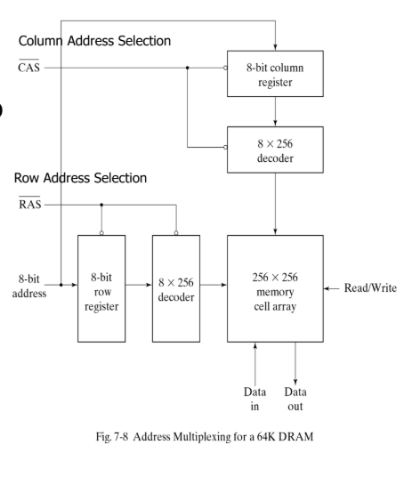
DJ's Real-World Q&A
Q: What if we added a third dimension to Address Multiplexing?
Yes, it is entirely possible, and it is exactly how modern high-performance memory is built!
In 2D multiplexing, we split the address into a Row and a Column. If we move to 3D, we add a third dimension: the Bank or Layer. The CPU sends the address in three staggered chunks over the same pins: Layer/Bank Select ("Which floor?"), Row Address ("Which hallway?"), and Column Address ("Which room?").
The Advantages
- Massive Density: Stack arrays vertically to pack gigabytes into the same 2D footprint.
- Shorter Wires (Less Delay): Routing vertically is physically shorter than across a wide motherboard, lowering propagation delay and power consumption.
- Parallel Processing: One layer can search for a Row while another layer simultaneously reads a Column.
The Disadvantages
- The Thermal Trap: The chips in the middle get incredibly hot with no airflow.
- Manufacturing Nightmares: Requires drilling microscopic holes through silicon, called Through-Silicon Vias (TSVs), which are fragile and expensive.
- Controller Complexity: The CPU's memory controller must perfectly time three multiplexing signals instead of two.
HBM (High Bandwidth Memory) used in modern GPUs and AI accelerators is exactly this: a true 3D stack of memory arrays using TSVs to multiplex data vertically!
Q: Are SSDs just using EEPROM technology?
An SSD uses Flash memory (specifically NAND Flash). Flash memory is actually just a highly evolved, high-speed type of EEPROM!
1. Standard EEPROM (The Tweezers)
- How it works: Reads, writes, and erases data one single byte at a time.
- The Vibe: Extremely precise, but agonizingly slow and low capacity (Kilobytes).
- Where you see it: Perfect for storing tiny configuration files, boot parameters, or sensor calibration data on custom PCBs or microcontrollers.
2. SSD / Flash Memory (The Bulldozer)
- How it works: Memory cells are grouped to read, write, and erase data in massive blocks (thousands of bytes at once).
- The Vibe: Loses byte-level precision, but gains incredible speed and massive data density.
- Where you see it: Designed to move massive files, load OS, and handle heavy traffic (e.g., 1TB M.2 PC drive).
Q: Should I use standard EEPROM for continuous MQ gas sensor data logging?
Using standard EEPROM for continuous sensor data logging will actually hurt your system's longevity, and it won't reduce electrical noise. Here is why:
1. The Write-Cycle Trap
Standard EEPROM can typically handle only 100,000 to 1,000,000 write cycles before it physically degrades. Constantly writing gas sensor data every few seconds will "burn out" the chip in weeks. Instead, rely on RAM (infinite write cycles) to hold active data, then bulk-write it to an SD card (Flash) or a network database.
2. The Best Use for EEPROM
EEPROM is perfect for saving calibration profiles. Save the calculated baseline resistance in clean air to the EEPROM. If the system loses power, it instantly remembers its calibration data upon reboot without manual recalibration.
3. Fixing the Sensor Noise
Noise is an analog problem. Fix it with:
- Hardware: Place a small decoupling capacitor (like 0.1µF) directly across the power and ground pins of the sensors to absorb stray voltage spikes.
- Software: Write a moving-average filter in your Python script to average out 10 or 20 readings at a time to smooth out analog spikes.
Q: Do SSDs and EEPROMs use physical fuses like PROMs? How do they degrade?
SSDs and EEPROMs do not use physical fuses at all. In older PROM chips, you literally melt microscopic fuses to write data, destroying them permanently. SSDs and EEPROMs are 100% electrical.
How Many Write Cycles Do SSDs Get?
Because an SSD writes data in massive blocks, engineers pack multiple bits into a single cell to make 1TB or 2TB drives feasible. Cycles depend on how many bits are crammed in:
- SLC (Single-Level Cell): 1 bit/cell. Survives roughly 100,000 write cycles. (Heavy enterprise servers).
- MLC (Multi-Level Cell): 2 bits/cell. Survives about 10,000 write cycles.
- TLC (Triple-Level Cell): 3 bits/cell. Survives about 3,000 write cycles. (Standard consumer SSDs).
- QLC (Quad-Level Cell): 4 bits/cell. Massive storage, but only survives about 1,000 write cycles.
How is it Written Without Melting?
SSDs use a Floating Gate Transistor. Imagine a tiny empty room (Floating Gate) surrounded by perfect insulated walls (Oxide layer).
- Writing (Programming): To write a
0, the SSD applies a massive 20V spike. This forces electrons to phase through the solid wall and get trapped inside (Quantum Tunneling). - Reading: If the room has trapped electrons, it is a
0. If empty, it is a1. - Erasing: A massive reverse voltage forces the trapped electrons to tunnel back out.
What Causes the Degradation?
It is purely wear and tear on that microscopic insulated wall (the Oxide layer). Every time electrons are forcefully punched through the wall, they cause microscopic atomic damage. After ~3,000 cycles (in TLC), the wall becomes so porous it can no longer hold electrons inside. The charge leaks out. Once insulation degrades to that point, that specific block is permanently dead!
ROM & Programmable Logic (PLDs)
Understanding hard-coded memory, fuse links, and how to program logic arrays.
1. Read-Only Memory (The Massive Truth Table)
While RAM is like a whiteboard, Read-Only Memory (ROM) is like a printed book. Once the data is written, it is permanently fixed and can only be read. But how is a ROM actually built inside?
Under the hood, a ROM is literally just a Decoder connected to massive OR gates. It acts exactly like a giant, hard-coded Truth Table.
- If you have $k$ address inputs, the internal decoder generates $2^k$ outputs (one for every possible memory address).
- Those outputs are fed into $n$ different OR gates to create the $n$-bit output data.
- Because it's a Decoder + OR gates, a ROM inherently implements a Sum of Minterms combinational circuit!
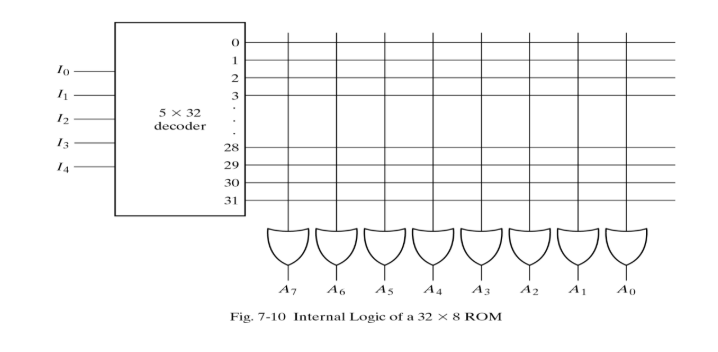
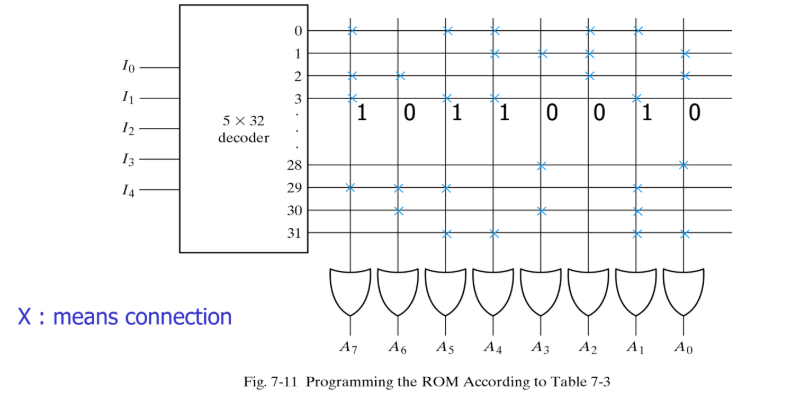
How Do You "Program" It?
Look at the grid intersections (called cross-points). Programming a ROM is a physical process.
- A blue X means there is a physical connection (a microscopic "fuse"). This acts as a logical 1.
- No X means the connection is broken (the fuse was blown). This acts as a logical 0.
2. The 4 Types of ROM
Mask ROM
Programmed at the factory during the actual silicon fabrication process. Impossible to change. Cheapest for mass production.
PROM (Programmable ROM)
Comes blank. You use a special machine to physically "blow" the fuses one time. Once blown, it cannot be reversed.
EPROM (Erasable PROM)
Can be wiped clean! You have to place the chip under a special Ultraviolet (UV) light for a period of time to erase the pattern.
EEPROM (Electrically Erasable)
The modern standard. Can be erased and rewritten entirely using electrical signals (no UV light required). Flash drives use a form of this!
3. Combinational PLDs (The "Menu" Analogy)
Programmable Logic Devices (PLDs) are chips with massive AND and OR arrays inside. Depending on which array you are allowed to program, it gets a different name. Think of it like a restaurant menu:
- PROM (Fixed AND, Programmable OR): The kitchen has fixed, pre-made combo meals (the Decoder). You only get to choose which combinations go on your specific plate (the OR gates).
- PAL (Programmable AND, Fixed OR): You get to custom-build the exact ingredients (Programmable AND), but the restaurant forces them onto specific, fixed plates (Fixed OR).
- PLA (Programmable AND, Programmable OR): Total freedom. You program both the ingredients and how they are plated! Note: PLAs often have an XOR gate at the end to optionally invert the final output ($x \oplus 1 = x'$).
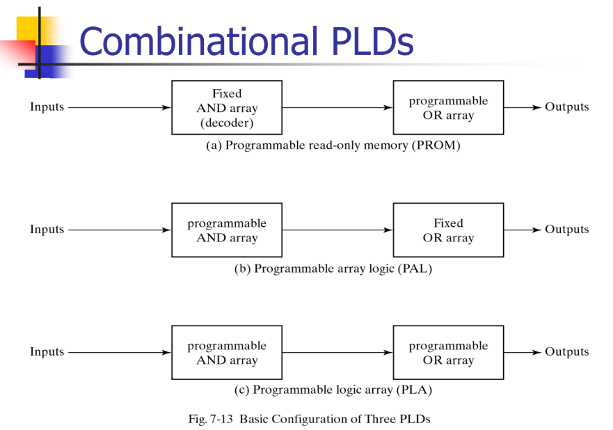
Programming PLAs & PALs
Why we must simplify logic before programming a PLA, and how to build the Programming Table.
1. The PLA Challenge (Why We Must Simplify)
In a ROM, you don't have to simplify anything because the internal Decoder naturally gives you every single possible minterm. But in a Programmable Logic Array (PLA), you have a finite number of AND gates. You must simplify your Boolean functions before programming to save hardware!
The Golden Rule of PLA Design
You must solve K-Maps for BOTH the True function ($F$) and the Complement function ($F'$). Why? To see which one requires fewer AND gates (product terms), and more importantly, to see if $F_1$ and $F_2$ can share the exact same AND gate!
Step-by-Step Example: Maximizing Hardware Efficiency
Let's implement two functions in a PLA. We want to use the absolute minimum number of AND gates:
$F_1 = \sum(0, 1, 2, 4)$
$F_2 = \sum(0, 5, 6, 7)$
Step 1: Solve All Four K-Maps
We must evaluate both the 1s ($F$) and the 0s ($F'$) for both functions to see all our options.
- For $F_1$:
Map 1s $\rightarrow F_1 = A'B' + A'C' + B'C'$ (3 terms)
Map 0s $\rightarrow F_1' = AB + AC + BC$ (3 terms) - For $F_2$:
Map 1s $\rightarrow F_2 = AB + AC + A'B'C'$ (3 terms)
Map 0s $\rightarrow F_2' = A'C + A'B + AB'C'$ (3 terms)
Step 2: Hunt for the Overlap
If we chose $F_1$ and $F_2$, they share zero terms. We would have to physically build $3 + 3 = 6$ separate AND gates.
But look closely at $F_1'$ and $F_2$!
- $F_1' = \mathbf{AB} + \mathbf{AC} + BC$
- $F_2 = \mathbf{AB} + \mathbf{AC} + A'B'C'$
They both share the exact same $\mathbf{AB}$ and $\mathbf{AC}$ terms! By choosing this combination, we only need to build 4 unique AND gates: ($AB$, $AC$, $BC$, $A'B'C'$).
💡 Pro Tip: EPIs vs PIs in Hardware
EPIs (Essential Prime Implicants) are your absolute minimum requirements. When you solve the K-Map, the EPIs are the AND gates you are forced to build because they cover a 1 (or a 0) that no other grouping can cover.
PIs (Prime Implicants) give you choices. When trying to share AND gates between $F_1$ and $F_2$, you actively look at the non-essential PIs to see if you can force them to match!
If $F_1$ has a choice between grouping a PI of $AB$ or $AC$, and $F_2$ requires $AB$ as an EPI, you obviously choose $AB$ for $F_1$ so they share the exact same gate. By doing this, you are physically reducing the number of silicon gates required to manufacture the microchip—saving power, space, and money!
Step 3: Fix the Output with XOR
Because we chose to build $F_1'$ (the inverse), we must flip the final answer back to true before it leaves the chip. We do this by programming the $F_1$ output XOR gate with a 1 ($x \oplus 1 = x'$). We leave $F_2$ programmed to 0 ($x \oplus 0 = x$).
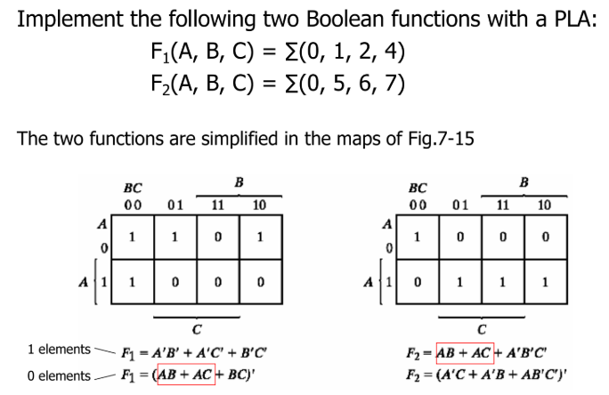
2. The PLA Programming Table
Once simplified, engineers translate the math into a standard Programming Table before blowing the fuses.
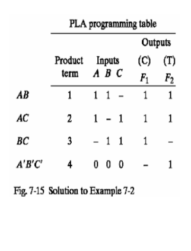
🔗 Bridging the Gap: From K-Maps to the Table
How exactly did we build this table from our K-map logic? Here is the direct translation:
- In Step 2, we found 4 unique product terms: $AB$, $AC$, $BC$, and $A'B'C'$. These become rows 1, 2, 3, and 4 in the table.
- Look at Row 1 ($AB$): $F_1'$ uses it, so we put a
1in the $F_1$ output column. $F_2$ ALSO uses it, so we put a1in the $F_2$ output column. - Look at Row 3 ($BC$): $F_1'$ uses it (put a
1in $F_1$). But $F_2$ does NOT use it, so we leave a-in the $F_2$ column. - Look at Row 4 ($A'B'C'$): $F_1'$ does NOT use it (put a
-in $F_1$). But $F_2$ DOES use it, so we put a1in the $F_2$ column.
How to Read the Table
1. Product Term (The AND Gates)
This column simply numbers every unique AND gate we decided to build during our simplification step. In our example, we need exactly 4.
2. Inputs (A, B, C)
This tells the machine exactly how to wire the inputs into each specific AND gate:
1: Connect the True input.0: Connect the Inverted input.-: Do not connect it at all.
(e.g., Term 1 is $AB$. So A=1, B=1, and C=-).
3. Outputs (Routing to the OR Gates)
The numbers inside the table rows tell the machine which AND gates should be wired into which OR gates:
1: Connect the AND gate to this output function.-: Do not connect it.
Example: Look at Product Term 1 ($AB$) in the table:
- Under $F_1$, there is a
1. So, we physically connect the $AB$ wire to the $F_1$ OR gate. - Under $F_2$, there is ALSO a
1. So, we route that exact same $AB$ wire to the $F_2$ OR gate! (This is our shared AND gate perfectly in action!)
4. The Output Headers (T/C)
The letters at the very top of the Output columns tell the machine how to program the final XOR gates:
- If the header says (C) (like $F_1$), wire the XOR to
1to invert the signal back to normal. - If the header says (T) (like $F_2$), wire the XOR to
0to keep it true.
The Final PLA Circuit
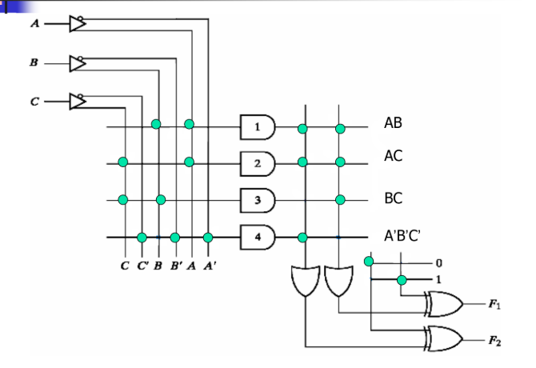
Notice how the four AND gates are perfectly shared by the two OR gates.
Real-World Application: VLSI & Edge Olfaction
1. The Impact on VLSI
This math is the absolute foundation of VLSI (Very Large Scale Integration) design. In VLSI, you design microchips containing billions of microscopic transistors. Every single AND gate you eliminate through K-Map simplification and term-sharing means your chip is physically smaller, consumes less power (crucial for battery life and thermals), and is cheaper to manufacture. Modern synthesizers do this math automatically, but understanding how it optimizes hardware separates good engineers from great ones.
2. Case Study: Hybrid Edge-Olfaction Logistics
Imagine an "Electronic Nose" IoT project that uses MQ-series gas sensors (like MQ-135 and MQ-3) and Arrhenius-based modeling on a Raspberry Pi to detect fruit spoilage. If the Python script crashes, the system goes blind. By adding a PLA to the custom PCB, you create an instantaneous Hardware-Level Fail-Safe Alarm.
- Digitize Inputs: Route the analog sensor voltages through Hardware Comparators (e.g., LM393). Now, an MQ-3 crossing a danger threshold outputs a pure digital `1`.
- Define Logic: We want a Ventilation Fan ($F_1$) to trigger if (Alcohol is dangerous) OR (Air Quality is dangerous AND it's Hot). We want a Buzzer ($F_2$) if BOTH Alcohol AND Air Quality are dangerous simultaneously.
- Burn the PLA: We simplify those Boolean equations, find the shared EPIs/PIs, and physically burn that logic into the PLA chip on the PCB.
Result: The PLA constantly monitors the raw sensor states at the speed of light. If a massive spoilage event occurs, it physically hard-wires power to the Fan and Buzzer instantly, completely bypassing the software stack!
3. Programmable Array Logic (PAL)
Unlike the PLA, a PAL has a Programmable AND array, but a Fixed OR array. This means you cannot share product terms among two or more OR gates. Each function must be simplified completely by itself!
PAL Design Example
Let's design a PAL for four functions ($w, x, y, z$). After K-map simplification, we get:
- w = ABC' + A'B'CD'
- x = A + BCD
- y = A'B + CD + B'D'
- z = w + AC'D' + A'B'C'D (Notice z reuses the entire output of w!)
🔗 Bridging the Gap: The "Ground-Level" Translation
Let's forget the technical jargon. How do we turn the math on a whiteboard into a physical microchip? It's just a game of connect-the-dots!
Example 1: Building the very first AND gate (Term 1)
- The Math: The first part of our equation says $w$ needs $A$, $B$, and $C'$ ($ABC'$).
- The Table: We literally just write this down as numbers for the factory. A is normal so we write
1. B is normal so we write1. C has a "not" mark ($C'$) so we write0. We don't need D at all, so we leave it blank (-). Look at Row 1 of the table below—that's exactly what it says! - The Fuse Map Drawing: Now look at the drawing below. See the very top AND gate? See the tiny blue 'X' marks? An 'X' simply means "leave this wire connected". The engineer literally just drew an 'X' on the A wire, the B wire, and the $C'$ wire. That's it! The drawing is just a visual version of the table!
Example 2: The Magic "Loop-Around" Cheat (Term 10)
- The Math: The equation for $z$ says it needs to use $w$ ($z = w + \dots$).
- The Fuse Map Drawing: Instead of wasting hardware to rebuild all of $w$'s logic from scratch, we cheat! Look closely at the physical drawing. See how the output wire for w loops all the way back around to the left side and becomes an input again?
- The Table: Look at Row 10 in the table. We completely ignore A, B, C, and D (they are all
-). We just put a1in the special new W column! - The Result: In the drawing for Term 10, there is only one single blue 'X' mark. It is stamped right onto that $w$ wire that looped back around. We saved an entire AND gate!
The PAL Programming Table
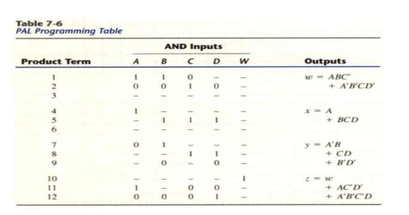
Because the OR connections are fixed, the "Outputs" column doesn't have 1s and dashes like the PLA table. It simply lists the final equation for each fixed output block.
The Fuse Map Implementation
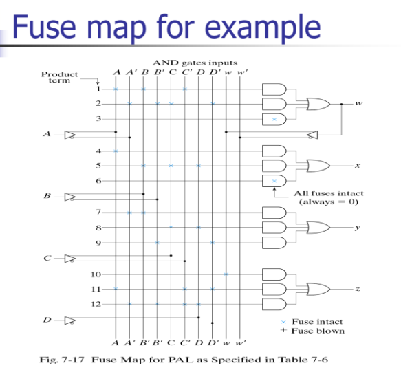
Notice the buffer feeding output w back into the inputs! This allows function z to use $w$ as a single input line, saving massive amounts of AND gates since it can't share them normally.
Sequential Devices & FPGAs
Beyond simple combinational logic: adding memory and massive scale.
1. Sequential Programmable Logic Devices (SPLD)
So far, PLAs and PALs are purely Combinational (no memory, no clocks). Sequential Programmable Devices fix this by slapping a block of Flip-Flops onto the output of the AND-OR array.
This allows the chip to have "states" (memory) and feed its current state back into its own inputs to calculate the next state—the foundation of all state machines!
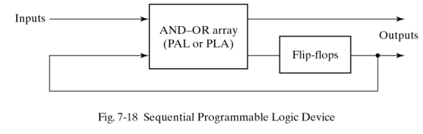
2. The Heavyweights: Gate Arrays & FPGAs
Gate Arrays
The basic component of modern VLSI. It is literally a microscopic "sea" of thousands to hundreds of thousands of identical gates stamped onto a silicon chip. The factory physically wires them together based on your specific design. Highly efficient, but factory-permanent.
FPGAs (Field Programmable Gate Arrays)
The ultimate prototyping tool. FPGAs are massive arrays of logic blocks that the user can program at their desk, rather than at a multi-million dollar fabrication plant.
- Uses Look-Up Tables (LUTs) stored in SRAM instead of blowing physical fuses.
- Advantage: Infinitely reprogrammable by simply writing new data to the SRAM.
- Disadvantage: SRAM is volatile. Every time you cut power to the FPGA, it gets amnesia and must reload its configuration from an external flash chip!
DAC & ADC Exam Problems
Mastering Digital-to-Analog calculations and theory for your university exams.
📚 The Master Formula Cheat Sheet
Before diving into the numbers, memorize these core concepts. Every single problem below relies on these exact rules:
- Resolution (Step Size): The physical value of the smallest bit (LSB).
Formula: $\text{Resolution} = \frac{\text{Full Scale Output}}{2^N - 1}$ (where N is the number of bits). - Proportionality Factor ($K$): Another name for the Resolution! It's the constant multiplier for the DAC.
Formula: $K = \frac{\text{Any Output Voltage}}{\text{Its Decimal Input}}$. - Finding Any Output: If you know the step size ($K$) and the binary input, you can find the output instantly!
Formula: $\text{Output} = K \times \text{Decimal Equivalent of Binary Input}$ - Full Scale Output: The absolute maximum voltage/current the DAC can produce. Occurs when all bits are
1.
Formula: $\text{F.S.} = \text{Resolution} \times (2^N - 1)$ - Percentage Resolution: How small one step is compared to the whole scale. It ONLY depends on the number of bits!
Formula: $\% \text{ Resolution} = \frac{1}{2^N - 1} \times 100\%$
Part 1: Mathematical Problem Solving
Problem 1: Current Output Proportionality
A 5-bit DAC has a current output. For a digital input of 10100, an output current of 10mA is produced. What will $I_{OUT}$ be for a digital input of 11101?
Solution:
- Input
10100in binary equals decimal 20. - $I_{OUT}$ = 10mA for this case. We find the proportionality factor ($K$) by dividing output by input: $K = 10mA / 20 = 0.5mA$.
- New input
11101in binary equals decimal 29. - $I_{OUT} = (0.5mA) \times 29 = \mathbf{14.5mA}$
💡 Why this works:
We are using the Finding Any Output formula here. A DAC is perfectly linear. If a decimal input of 20 gives 10mA, that means every single step (1 decimal unit) is worth exactly $10/20 = 0.5mA$. Once we know the value of 1 step, we can multiply it by any new decimal input to find its exact output!
Problem 2: Finding Maximum Voltage
What is the largest value of output voltage from an 8-bit DAC that produces 1.0V for a digital input of 00110010?
Solution:
- Input
00110010equals decimal 50. - $1.0V = K \times 50 \implies K = 20mV$.
- The largest output occurs when all 8 bits are 1s (
11111111), which equals decimal 255. - $V_{OUT(max)} = 20mV \times 255 = \mathbf{5.10V}$
💡 Why this works:
We are using the Full Scale Output formula. First, we find the step size ($K$) just like Problem 1. The maximum possible output of any DAC always happens when every single bit is turned on (all 1s). For an 8-bit system, the absolute highest decimal number you can make is 255. So, we multiply the step size by 255!
Problem 3 & 4: Calculating by Bit Weights
A 5-bit D/A converter produces $V_{OUT} = 0.2V$ for a digital input of 00001. Find $V_{OUT}$ for inputs 11111 and 10001.
Solution:
- 0.2V is the weight of the Least Significant Bit (LSB). The weights of the other bits simply double: 0.4V, 0.8V, 1.6V, and 3.2V.
- For
11111: Add them all up $\implies 3.2 + 1.6 + 0.8 + 0.4 + 0.2 = \mathbf{6.2V}$. - For
10001: Add just the MSB and LSB $\implies 3.2 + 0.2 = \mathbf{3.4V}$. (Alternatively,10001is decimal 17. So $0.2V \times 17 = 3.4V$).
💡 Why this works:
This problem proves that a DAC is just an adder! The LSB is the smallest step (0.2V). Because binary is base-2, every bit to the left is exactly double the physical weight of the previous one. If you turn on all the bits (11111), the total voltage is literally just the sum of their individual weights.
Problem 5: Resolution Percentage
A 10-bit DAC has a step size of 10mV. Determine the full-scale output voltage and the percentage resolution.
Solution:
- Number of steps for 10 bits = $2^{10} - 1 = 1023$ steps.
- Full scale output = $10mV \times 1023 = \mathbf{10.23V}$.
- % Resolution = $\frac{\text{Step Size}}{\text{Full Scale}} \times 100\% = (\frac{10}{10230}) \times 100\% \approx \mathbf{0.1\%}$
- Note: % Resolution only depends on the number of bits! You can always calculate it as $\frac{1}{2^N - 1} \times 100\%$.
💡 Why this works:
We are using the Percentage Resolution formula. This tells us how precise the DAC is. A 0.1% resolution means that one single step up or down changes the total output by only 0.1%. Notice how we didn't even need the 10mV number? The precision of a DAC is strictly limited by how many bits it has ($N$), nothing else!
Problem 6: Base Resolution and Full-Scale
Assume $V_{REF} = 10V$ and $R = 10 k\Omega$. Determine the resolution and full-scale output for this DAC. (Assume $R_L$ is much smaller than $R$).
Solution:
- First, find the MSB current: $I_0 = \frac{V_{REF}}{R} = \frac{10V}{10k\Omega} = \mathbf{1mA}$.
- The next three currents halve each time: 0.5mA, 0.25mA, and 0.125mA.
- The Resolution is simply the LSB (the smallest step), which is $\mathbf{0.125mA}$.
- The Full-Scale Output happens when all inputs are HIGH (all switches closed): $I_{OUT} = 1 + 0.5 + 0.25 + 0.125 = \mathbf{1.875mA}$.
- Note: If you increase $V_{REF}$, the output currents increase proportionally!
💡 Why this works:
This problem tests your understanding of hardware scaling. The MSB current is strictly dictated by Ohm's Law ($I = V/R$). Because it's a binary system, every bit after the MSB is exactly half the physical current of the one before it. The resolution is always equal to the LSB, which is the smallest possible current that can flow through the final resistor.
Problem 7: Calculating Output with Error Range
A certain 8-bit DAC has a full-scale output of 2mA and a full-scale error of $\pm 0.5\% \text{ F.S.}$ What is the range of possible outputs for an input of 10000000?
Solution:
- Step size (Resolution) = $\frac{2mA}{255} = \mathbf{7.84\mu A}$.
- Input
10000000equals decimal 128. - The ideal output should be $128 \times 7.84\mu A = \mathbf{1003.52\mu A}$ (or approx $1004\mu A$).
- Calculate the absolute error based on Full-Scale (2mA): $\pm 0.5\% \times 2mA = \mathbf{\pm 10\mu A}$.
- The actual output can deviate by $\pm 10\mu A$ from the ideal $1004\mu A$, so the range is $\mathbf{994\mu A \text{ to } 1014\mu A}$.
💡 Why this works:
We are applying the Finding Any Output formula, but accounting for real-world manufacturing flaws. A DAC isn't perfect. A "Full-Scale Error" of 0.5% means the physical resistors inside the chip might be slightly off, causing a max deviation of $\pm 10\mu A$. No matter what input you give it, the true analog output could be anywhere inside that $\pm 10\mu A$ window.
Problem 8: Digital Ramp ADC Conversion Math
Assume the following values for an ADC: clock frequency = 1 MHz; $V_T$ = 0.1 mV; DAC has F.S. output = 10.23 V and a 10-bit input. Determine:
a. The digital equivalent obtained for $V_A = 3.728 V$.
b. The conversion time.
c. The resolution of this converter.
Solution:
- a. Digital Equivalent: The DAC has 10 bits ($2^{10} - 1 = 1023$ steps). The step size is $\frac{10.23V}{1023} = \mathbf{10mV}$. The staircase voltage ($V_{AX}$) goes up by 10mV per step. To reach or exceed $V_A$ ($3.728V$), we need $\frac{3.7281V}{10mV} = 372.81$ steps. The counter must count up to the next whole number: 373 steps. The binary equivalent of 373 is
0101110101. - b. Conversion Time: 373 steps means 373 clock pulses. At 1 MHz (1 pulse per microsecond), the total conversion time is exactly $373 \mu s$.
- c. Resolution: The ADC's resolution is exactly the DAC's step size: 10mV. In percent, it is $\frac{1}{1023} \times 100\% \approx \mathbf{0.1\%}$.
💡 Why this works:
This introduces the Digital Ramp ADC! Remember that an ADC has a DAC inside it. The ADC simply forces its internal DAC to count up like a staircase (10mV per step). It takes 372.8 steps to climb as high as the real-world voltage of 3.728V. Since a counter can't do decimals, it takes one final step to 373 to surpass it and trip the comparator. Because the clock runs at 1 MHz, every single step takes exactly 1 microsecond.
Problem 9: ADC Quantization Range
For the same ADC in Problem 8, determine the approximate range of analog input voltages that will produce the exact same digital result of 0101110101 (373).
Solution:
- Step 372 equals exactly 3.72V. Step 373 equals exactly 3.73V.
- If $V_A$ is anywhere slightly above 3.72V (like 3.721V), the comparator won't trip at step 372. It will keep going and trip at step 373 (3.73V).
- Thus, any voltage sitting between approximately 3.72V and 3.73V will yield the exact same answer (373). This range width is exactly 10mV, matching the DAC's resolution!
💡 Why this works:
This highlights "Quantization"! The physical world is smooth (infinite decimals), but a 10-bit computer only has 1,024 discrete "buckets" to put those voltages into. Any voltage from 3.72001V all the way to 3.72999V is going to fall into the exact same 373 bucket. This means an ADC inherently destroys a tiny bit of precision, and the size of that lost precision is exactly equal to its step size (10mV).
Problem 10: Total Maximum Error in ADC
A certain 8-bit ADC has a full-scale input of 2.55 V. It has a specified physical error of 0.1% F.S. Determine the maximum amount by which the internal $V_{AX}$ output can differ from the real-world analog input.
Solution:
- First, find the unavoidable Quantization Error (step size): $\frac{2.55V}{255} = \mathbf{10mV}$. Because it works in "stairs", it could naturally be off by up to 10mV at any time.
- Next, find the physical component error: $0.1\% \times 2.55V = \mathbf{2.55mV}$.
- Add both together to find the absolute worst-case scenario: $10mV + 2.55mV = \mathbf{12.55mV}$.
💡 Why this works:
This problem combines the two types of error we just learned. First, you have Quantization Error (the 10mV step size we lose because the world is continuous but the ADC is chunky). Second, you have Hardware Error (the 2.55mV physical inaccuracy of the silicon resistors). If you are extremely unlucky, both errors could push in the same direction, meaning your digital reading could be off by a maximum total of 12.55mV from the real-world voltage!
Part 2: Exercise 1.6 (Exam Answers)
The answers below were not in your notes. They have been generated and explained lucidly for your exam prep.
1.6.1 Multiple Choice Questions
a) Each digital input of DAC are weighted according to their position in the...
Answer: i) binary number
Why? Because it's a binary system! The weight of a bit depends entirely on whether it is the 1s place, 2s place, 4s place, etc., inside the binary sequence.
b) The ADC converts analog input to a digital...
Answer: iii) number
Why? An ADC takes a continuous physical voltage wave (analog) and chops it up into discrete binary numbers that a CPU can read.
1.6.2 Questions for Short Answers
a) What is the function of a transducer and actuator?
Answer: A transducer is a sensor. It converts a physical real-world variable (like temperature or pressure) into an electrical analog signal. An actuator is the opposite. It converts an electrical signal back into physical real-world action (like spinning a motor or opening a valve).
b) What do you mean by input weights?
Answer: In a DAC, not all input bits are treated equally. The "weight" is the specific physical voltage value assigned to a bit based on its position. The MSB has the highest weight (voltage), and the LSB has the lowest weight (voltage). The total output is the sum of all the weights.
c) Define resolution. What is the full scale output?
Answer: Resolution (or Step Size) is the smallest possible physical change the DAC can output. It is exactly equal to the weight of the LSB. Full Scale Output is the absolute maximum voltage the DAC can generate when every single input bit is cranked to 1.
d) What is the function of an ADC? e) What function does a DAC perform?
Answer: An ADC (Analog-to-Digital Converter) translates the real, continuous world (analog voltage) into discrete binary numbers for a computer to understand. A DAC (Digital-to-Analog Converter) translates a computer's binary numbers back into a continuous physical voltage wave to control the real world.
1.6.3 Analytical Question
a) "Five elements are involved when a computer is monitoring and controlling a physical variable that is assumed to be analog." Illustrate the above situation.
Answer (The 5-Step Control Loop): Think of a smart thermostat controlling a room's temperature:
- Physical Variable: The actual temperature in the room.
- Transducer: A thermistor reads the heat and outputs a continuous analog voltage ($2.4V$).
- ADC (Analog-to-Digital Converter): Converts that $2.4V$ into a binary number (e.g.,
100110) so the CPU can read it. - Computer: The CPU receives
100110, realizes the room is too cold, and outputs a new binary command to turn on the heater. - DAC & Actuator: A DAC converts the CPU's binary command back into an analog current to drive the Actuator (the physical heater coil), which heats up the room, closing the loop!
Part 3: Exercise 2.6 (Exam Answers)
2.6.1 Multiple Choice Questions
a) Resolution of DAC is equal to the weight of...
Answer: i) LSB
Why? The Least Significant Bit always controls the absolute smallest possible step size in the output.
b) When the binary input is all 0s, ideally the output of a DAC will be?
Answer: i) Zero volt
Why? If every single input bit is turned off (0), their weights sum to zero. (If it isn't zero in real life, you have an Offset Error!)
2.6.2 Questions for Short Answers
a) & f) Define full scale error and offset error.
Answer: Full-Scale Error is the maximum deviation of the actual output from the perfect theoretical output when all inputs are 1s. Offset Error occurs when the DAC produces a non-zero output voltage even when all digital inputs are strictly 0s (a flat shift in the entire graph).
b) & 2.6.3 b) What is the advantage of R/2R ladder DAC over the DAC that uses binary weighted resistors?
Answer: Binary weighted DACs require a huge range of exact, precise resistor values (R, 2R, 4R, 8R... up to $2^{N-1}R$), which is incredibly difficult to manufacture accurately on a single silicon chip. The R/2R ladder brilliantly fixes this by only requiring two resistor values (R and 2R). This makes them cheap, highly accurate, and easy to mass-produce.
c) An 8-bit DAC has an output of 3.92 mA for an input of 01100010. What are the DAC’s resolution and full-scale output?
Answer: Input 01100010 = decimal 98.
$3.92mA = K \times 98 \implies K = \mathbf{0.04mA \text{ (Resolution)}}$.
Full-scale = $0.04mA \times 255 = \mathbf{10.2mA}$.
d) What is the percentage resolution of an 8-bit DAC?
Answer: $\frac{1}{2^8 - 1} \times 100\% = \frac{1}{255} \times 100\% \approx \mathbf{0.392\%}$
e) How many different output voltages can a 12-bit DAC produce?
Answer: $2^{12} = \mathbf{4,096}$ different voltage steps.
g) What is settling time?
Answer: It is the time required for the DAC's analog output to physically "settle" within a specified error band (usually $\pm \frac{1}{2} \text{LSB}$) after the digital input code suddenly changes. It dictates how fast the DAC can operate.
h) Describe offset error and its effect on a DAC output.
Answer: Offset error is a constant stray voltage added to every output level. Its effect is that it shifts the entire linear output graph up or down by a constant amount.
2.6.3 Analytical Questions
a) Describe the operation of a DAC.
Answer: A DAC assigns a specific analog voltage weight to each bit of a digital binary word (MSB is largest, LSB is smallest). It then uses a summing amplifier circuit to add together the physical weights of all the bits that are currently set to '1', outputting a single, continuous analog voltage proportional to that binary number.
c) Discuss some of the DAC applications.
Answer:
1. Audio: Converting digital MP3 files into continuous analog waveforms to drive physical speakers.
2. Video: Converting digital pixel data into analog VGA signals for monitors.
3. Motor Control: Allowing a digital computer to precisely adjust the physical speed of an analog motor.
Part 4: Exercise 3.7 (Exam Answers)
3.7.1 Multiple Choice Question
a) The number of total steps of a 9-bit ADC is...
Answer: iii) 511
Why? The formula for total steps is $2^N - 1$. For 9 bits, it's $2^9 - 1 = 512 - 1 = 511$.
3.7.2 Questions for Short Answers
a) What do you know about quantization error?
Answer: It is an unavoidable error in digital translation! Because an ADC chops a smooth continuous analog wave into chunky discrete digital "stairs", the digital value is almost never 100% perfectly matched to the true analog value. The maximum quantization error is equal to exactly 1 LSB (one step size).
b) Define conversion time.
Answer: The total time it takes for an ADC to fully process an analog input voltage and output the final stable digital binary number.
c) What is the major disadvantage of the digital ramp type ADC?
Answer: It is very slow, and its conversion time is wildly inconsistent. Because the internal counter always starts from 0 and counts up step-by-step, measuring a 1-Volt signal is incredibly fast, but measuring a 10-Volt signal takes ten times as long!
d) & e) What is the function of the comparator in the ADC?
Answer: It acts as the referee! It constantly compares the unknown real-world analog input voltage ($V_A$) with the internally generated "staircase" voltage ($V_{AX}$). As soon as the internal staircase steps higher than the real-world voltage, the comparator flips its output, instantly telling the counter to STOP counting.
f) Where is the approximate digital equivalent of VA when the conversion is complete?
Answer: It is sitting safely inside the internal counter (or output register) of the ADC, ready for a computer or microcontroller to read it.
g) What is the function of the EOC signal?
Answer: EOC stands for "End of Conversion". It is a digital flag that the ADC waves to the computer to announce: "I am finished processing! The final binary data on my output pins is stable and ready to be read."
3.7.3 Analytical Question
a) Draw digital ramp ADC and write down its operation.
Answer (The Operation Flow): A Digital Ramp ADC consists of a Counter, a DAC, and a Comparator.
- The system is given a "Start" signal, and the Counter resets to 0.
- With every clock pulse, the Counter counts up (1, 2, 3...).
- The DAC reads this binary count and instantly turns it into a rising analog "staircase" voltage ($V_{AX}$).
- The Comparator constantly watches both the rising staircase ($V_{AX}$) and the unknown real-world voltage ($V_A$).
- The very moment the staircase voltage steps just slightly higher than the real-world voltage, the Comparator trips.
- This trip signal instantly stops the clock from feeding the Counter, and fires the EOC (End of Conversion) pin to tell the computer the data is ready. The final binary number sitting in the Counter is the digital answer!
b) A digital transmission system uses a (7,4) systematic linear Hamming code for transmitting data over a noisy channel. If three of the message-codeword pairs in this code $(m_i, c_i)$ are known to be:
- $m_1 = 1100, \quad c_1 = 0101100$
- $m_2 = 1110, \quad c_2 = 0011110$
- $m_3 = 0110, \quad c_3 = 1000110$
Which of the following is a valid codeword in this code?
- (A) 1101001
- (B) 1011010
- (C) 0001011
- (D) 0110100
Detailed Explanation & Solution: Correct answer is option (C)
Step 1: Understand the Layout
A (7,4) systematic code means there are 7 total bits: 3 Parity bits and 4 Data bits. "Systematic" means the data isn't scrambled—it's just glued together. By looking at the first example (Message = 1100, Codeword = 0101100), we can see the 3 parity bits are simply placed at the front: $P_0 P_1 P_2 \ d_0 d_1 d_2 d_3$.
Step 2: Derive the Parity Rules (The Venn Diagram Trick)
Instead of trying to guess the math, the Hamming (7,4) code is famously built using a Venn Diagram of 3 overlapping circles. The 4 Data bits sit in the overlapping regions, and the 3 Parity bits sit in the outer regions to act as "guards" for their respective circles.
By looking at the visual above, we can easily write out the rules! Each Parity guard just checks the data bits physically sitting inside its circle:
- Circle 0 checks: $P_0 = d_0 \oplus d_1 \oplus d_3$
- Circle 1 checks: $P_1 = d_1 \oplus d_2 \oplus d_3$
- Circle 2 checks: $P_2 = d_0 \oplus d_1 \oplus d_2$
Step 3: What does the Math ($\oplus$) mean?
The $\oplus$ symbol stands for XOR (Exclusive OR). When XORing multiple bits together (like $1 \oplus 0 \oplus 1$), it acts as an ODD parity checker: if there is an ODD number of 1s, the result is 1. If there is an EVEN number of 1s, the result is 0. So $P_0 = d_0 \oplus d_1 \oplus d_3$ just ensures Circle 0 balances out!
Step 4: Test the Options
Now that we know the rules, take the last 4 bits of each multiple-choice option (the data), plug them into our Circle Equations, and see if the math produces the first 3 bits (the parity)!
- (A) 110 1001: Data is
1001.
$P_0 = 1 \oplus 0 \oplus 1 = 0$. But the option starts with $P_0 = 1$. (Invalid) - (B) 101 1010: Data is
1010.
$P_0 = 1 \oplus 0 \oplus 0 = 1$ (Matches).
$P_1 = 0 \oplus 1 \oplus 0 = 1$. But the option has $P_1 = 0$. (Invalid) - (C) 000 1011: Data is
1011.
$P_0 = 1 \oplus 0 \oplus 1 = 0$ (Matches).
$P_1 = 0 \oplus 1 \oplus 1 = 0$ (Matches).
$P_2 = 1 \oplus 0 \oplus 1 = 0$ (Matches). (VALID!) - (D) 011 0100: Data is
0100.
$P_0 = 0 \oplus 1 \oplus 0 = 1$. But the option starts with $P_0 = 0$. (Invalid)
Part 5: Sequential Circuit Timing (Exam Answers)
Maximum Clock Frequency ($f_{max}$) Calculation
Question: For the sequential circuit shown, calculate the maximum clock frequency (rounded off to the nearest integer) at which the circuit can operate reliably.
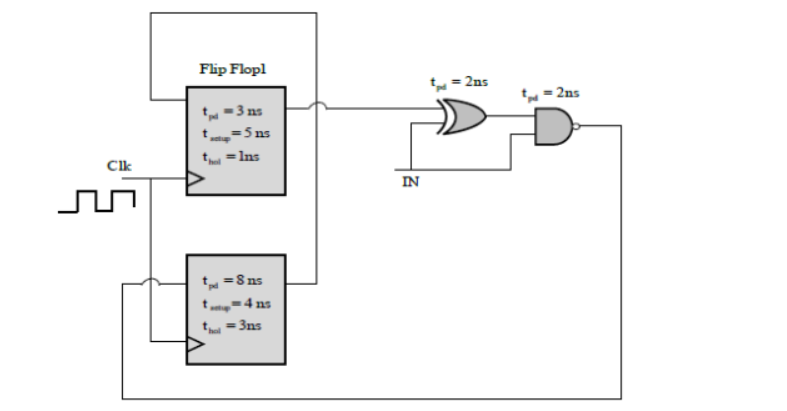
Detailed Explanation (Decoding the Math): Correct answer is 76.92 MHz
That textbook solution is super dry. Let's translate it into English!
Think of the Clock pulse as a Starting Gun in a race. When the gun fires, data (the runners) bursts out of the "Sending" Flip-Flop, runs through the obstacle course (the logic gates), and must arrive at the "Receiving" Flip-Flop in time to get seated before the NEXT starting gun fires. The time it takes to get seated at the end is called the Setup Time ($t_{setup}$).
The Rule: The time between two starting guns (the Clock Period $T$) MUST be greater than or equal to the total time of the slowest race.
Clock Period (T) ≥ Output Delay (t_pd) + Obstacle Delay (t_logic) + Seating Time (t_setup)
We just have to test every possible "race track" in the circuit and find the slowest one!
- Race Track 1: Bottom Flip-Flop (FF2) to Top Flip-Flop (FF1)
- Sender ($t_{pd}$): FF2 takes $8\text{ ns}$ to push the data out.
- Obstacles ($t_{logic}$): The wire goes directly into FF1. No gates! Delay is $0\text{ ns}$.
- Receiver ($t_{setup}$): FF1 needs $5\text{ ns}$ to set up.
- Total Time: $8 + 0 + 5 = \mathbf{13\text{ ns}}$
- Race Track 2: Top Flip-Flop (FF1) to Bottom Flip-Flop (FF2)
- Sender ($t_{pd}$): FF1 takes $3\text{ ns}$ to push the data out.
- Obstacles ($t_{logic}$): Data hits an XOR gate ($2\text{ ns}$) and an AND gate with a bubble, which is a NAND gate ($2\text{ ns}$). Total gate delay is $4\text{ ns}$.
- Receiver ($t_{setup}$): FF2 needs $4\text{ ns}$ to set up.
- Total Time: $3 + 4 + 4 = \mathbf{11\text{ ns}}$
The Conclusion:
The slowest race takes 13 ns. Therefore, the starting gun cannot fire any faster than every 13 ns. That means our Minimum Clock Period ($T_{min}$) is exactly $13\text{ ns}$.
To find the Maximum Frequency ($f_{max}$), we just flip it: $f = \frac{1}{T}$.
$f_{max} = \frac{1}{13 \times 10^{-9}\text{ s}} = 0.07692 \times 10^9\text{ Hz} = \mathbf{76.92\text{ MHz}}$.
Part 6: Signed Representations (Exam Answers)
Signed Magnitude, 1's Complement, and 2's Complement
Question: P, Q, and R are the decimal integers corresponding to the 4-bit binary number 1100 considered in signed magnitude, 1's complement, and 2's complement representations, respectively. Find the 6-bit 2's complement representation of (P + Q + R).
Detailed Explanation & Solution: Correct answer is 110101
Because the Most Significant Bit (MSB) of 1100 is a 1, we know this is a negative number in all three systems. Here is how each system decodes the remaining bits to find the magnitude:
- Signed Magnitude (P): The MSB (1) means negative. The remaining bits
100give the exact magnitude.100in binary is $4$. Therefore, $P = -4$. - 1's Complement (Q): To find the magnitude of a negative number in this system, we flip all the bits. The 1's complement of
1100is0011.0011is $3$. Therefore, $Q = -3$. - 2's Complement (R): To find the magnitude here, we flip the bits and add 1. Flipping
1100gives0011. Adding 1 gives0100.0100is $4$. Therefore, $R = -4$.
The Sum:
$(P + Q + R) = (-4) + (-3) + (-4) = \mathbf{-11}$
Converting -11 to 6-bit 2's Complement:
- First, write positive 11 in 6 bits:
001011 - Second, flip all the bits (1's complement):
110100 - Third, add 1 (2's complement):
110100 + 1= 110101
Part 7: Error Detection & Hamming Code (Exam Answers)
1. Single Parity Bit (The Basics)
The simplest way to detect an error is to add a single extra bit to the end of your data before sending it.
- Even Parity: We want the TOTAL number of 1s in the data (including the parity bit) to be EVEN.
Example: Data is1100101(Four 1s). It's already even, so we attach a0. Sent data:11001010. - Odd Parity: We want the TOTAL number of 1s to be ODD.
Example: Data is1110100(Four 1s). We need odd, so we attach a1. Sent data:11101001.
At the Receiver: The receiver just counts the 1s. If we agreed on Even Parity and the receiver counts an odd number of 1s, it instantly knows the data is corrupted and rejects it!
2. Standard Hamming Code (Detect & Correct)
Forget the Venn Diagram circles for a second. The circles were for the specific "Systematic" problem earlier. The Standard Hamming Code (developed by R.W. Hamming in 1951) uses a much easier layout: D7 D6 D5 P4 D3 P2 P1.
The "Pass the Exam" Cheat Code:
Why do the numbers look so weird? It's pure genius: Every Parity bit checks the positions based on its own binary representation!
- P1 (Position 1 is
001): Checks every position that has a '1' in the 1s place (1, 3, 5, 7). → P1, D3, D5, D7 - P2 (Position 2 is
010): Checks every position that has a '1' in the 2s place (2, 3, 6, 7). → P2, D3, D6, D7 - P4 (Position 4 is
100): Checks every position that has a '1' in the 4s place (4, 5, 6, 7). → P4, D5, D6, D7
Example Problem: Detect and correct the error in the received even-parity Hamming code 1011011.
Layout: D7=1, D6=0, D5=1, P4=1, D3=0, P2=1, P1=1
- Step 1 (Check P1): Look at positions 1, 3, 5, 7 → (P1, D3, D5, D7) = (1, 0, 1, 1).
Count the 1s: Three 1s (Odd). Since we want Even parity, this is an Error (1). - Step 2 (Check P2): Look at positions 2, 3, 6, 7 → (P2, D3, D6, D7) = (1, 0, 0, 1).
Count the 1s: Two 1s (Even). This is perfectly fine. No Error (0). - Step 3 (Check P4): Look at positions 4, 5, 6, 7 → (P4, D5, D6, D7) = (1, 1, 0, 1).
Count the 1s: Three 1s (Odd). Since we want Even parity, this is an Error (1).
Finding the Culprit:
Read the errors backwards (P4, P2, P1) to get the binary error word: 101.
101 in decimal is 5. That means the 5th bit (D5) was flipped!
To correct it, we just flip D5 from a 1 to a 0. The correct word is 1001011.
Advanced ADC Types & Architectures
Understanding the major architectures of Analog to Digital Converters.
1. Analog to Digital Converter Overview
- An A/D converter (ADC) accepts an analog sample $V_A$ and produces an N-bit digital word.
- Examples of usage: Digital volt meters, cell phones, thermocouples, and digital oscilloscopes.
- Types of A/D Converters: Dual Slope ADC, Successive Approximation ADC, Flash ADC, Delta-Sigma ADC, etc.
2. Counter Type ADC (Digital Ramp)
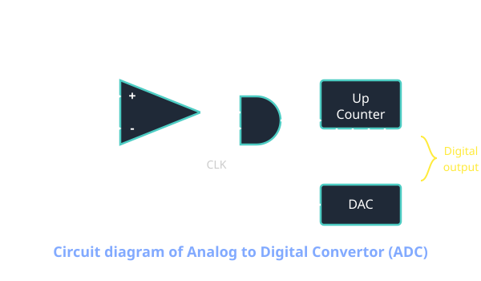
For an N-bit counter type ADC:
- Maximum number of clock pulses required for conversion = $\mathbf{2^N - 1}$
- Maximum time required for conversion = $\mathbf{(2^N - 1) T_{CLK}}$
- Minimum number of clock pulses = 1
- Average number of clock pulses = $\mathbf{2^{N-1}}$
3. Successive Approximation Type ADC (SAR)
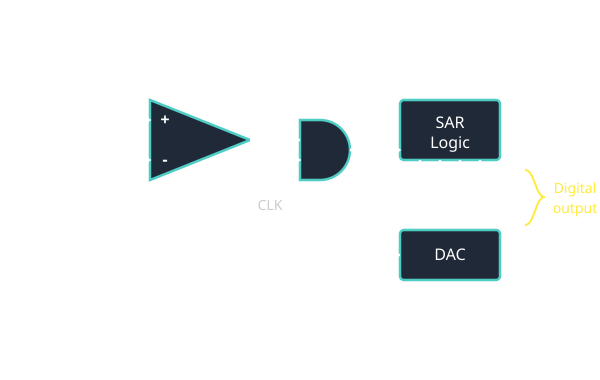
- It is faster than the digital ramp (counter type) ADC.
- Conversion time ($t_c$) is completely independent of the value of the analog input voltage ($V_a$).
- It has a fixed conversion time.
- Maximum number of clock pulses for conversion = $\mathbf{N}$
- Maximum conversion time = $\mathbf{N \cdot T_{CLK}}$
Note: SOC stands for Start of Conversion. EOC stands for End of Conversion.
4. Flash Type ADC
- Also known as a Parallel-comparator type ADC or Simultaneous converter.
- It is the highest speed ADC (fastest possible conversion).
Functional Components for an N-bit Flash ADC:
- It utilizes $\mathbf{2^N - 1}$ comparators to compare the input signal level simultaneously with each of the $2^N - 1$ possible quantization levels.
- The outputs of the comparators are processed by an encoding-logic block to provide the N bits of the output digital word.
- Complete conversion can be obtained within one single clock cycle.
- Total number of comparators = $\mathbf{2^N - 1}$
- Total number of resistors = $\mathbf{2^N}$
- Total number of priority encoders = $\mathbf{1}$ (typically a $2^N \times N$ encoder)
Binary Adders
The fundamental circuits used for arithmetic operations.
1. Half Adder
The most basic arithmetic operation is addition. A Half Adder is a combinational logic circuit with two inputs (A and B) and two outputs (Sum and Carry). It is the basic building block for the addition of two single-bit numbers.
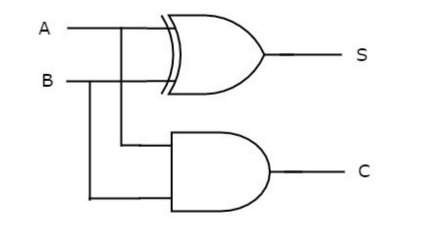
Boolean Functions:
- Sum (S) = $A \oplus B$ (XOR Gate)
- Carry (C) = $A \cdot B$ (AND Gate)
Sum $S$ is the Least Significant Bit and carry $C$ is the Most Significant Bit of the resultant sum.
2. Full Adder
A Full Adder overcomes the drawback of a Half Adder by accepting a third input: the carry-in ($C_{in}$) from a previous stage. It has three inputs ($A, B, C_{in}$) and two outputs ($S, C_{out}$).
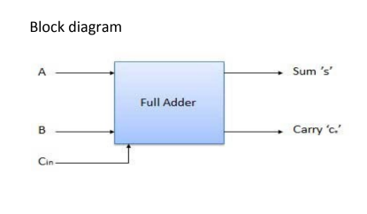
Boolean Functions:
- Sum (S) = $A \oplus B \oplus C_{in}$
- Carry ($C_{out}$) = $AB + (A \oplus B)C_{in}$
A Full Adder is constructed using two Half Adders and one OR gate. If $C_{in} = 0$, the Full Adder behaves exactly like a Half Adder.
3. 4-bit Binary (Ripple Carry) Adder
The 4-bit binary adder performs the addition of two 4-bit numbers ($A_3 A_2 A_1 A_0$ and $B_3 B_2 B_1 B_0$). It is implemented by cascading four Full Adders.
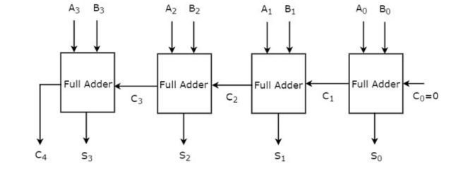
- The carry output ($C_{out}$) of each Full Adder becomes the carry input ($C_{in}$) of the next higher-order Full Adder.
- The addition produces a sum of at most 5 bits. The final carry out ($C_4$) is the MSB of the final answer.
- This is known as a Ripple Carry Adder because the carry bit "ripples" from the least significant stage all the way to the most significant stage.
4. Half Subtractor
A Half Subtractor is a combinational circuit with two inputs and two outputs (Difference and Borrow). It produces the difference between the two binary bits at the input and also produces a Borrow output to indicate if a 1 has been borrowed. In the subtraction ($A - B$), $A$ is called the Minuend bit and $B$ is called the Subtrahend bit.
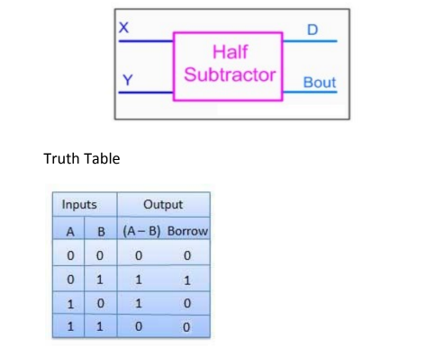
Truth Table Insights:
- Notice that $0 - 1$ produces a Difference of 1, and requires a Borrow of 1!
5. 4-bit Binary Adder / Subtractor
The circuit that can be used to perform either addition or subtraction of two binary numbers based on a control signal is known as a Binary Adder / Subtractor. Both operations utilize a cascaded set of Full Adders.
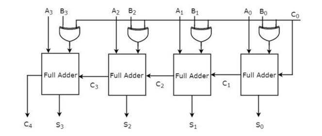
How it works:
- The input bits of binary number $A$ are directly applied to the Full Adders.
- The input bits of binary number $B$ are passed through 2-input XOR gates. The other input to these XOR gates is a control signal, $C_0$.
- Addition ($C_0 = 0$): The XOR gates act as transparent buffers (outputting exactly $B$). The initial carry $C_0$ is 0. The circuit functions as a normal Ripple Carry Adder.
- Subtraction ($C_0 = 1$): The XOR gates invert the bits of $B$ (outputting $B'$). The initial carry $C_0$ is 1. This essentially adds $A$ to the Two's Complement of $B$ ($A + B' + 1$), which is mathematically identical to $A - B$.
DAC and ADC Basics
Understanding the foundational concepts of Data Converters and the Weighted Resistor DAC.
1. What are DACs and ADCs?
Analog to Digital Converter (ADC) basically converts physical variables which are analog in nature to digital signal for processing. They have high conversion efficiency and requires less power. Examples of physical variables include audio signals, temperature, pressure etc. It can also be defined as a device that provides a digital output which is the representation of the input voltage or current level.
Digital to Analog Converter (DAC) basically converts digital code that represents digital value to analog current or voltage. In any communication system, the analog signal which is in the form of physical variables is converted to digital value by ADC. This digital signal is converted back to Analog signal for further processing i.e. Analog signal is necessary to drive Motors, temperature controller etc.
2. Digital to Analog Converter (DAC)
D/A converter (also called a DAC) accepts an n-bit digital word and produces an analog sample.
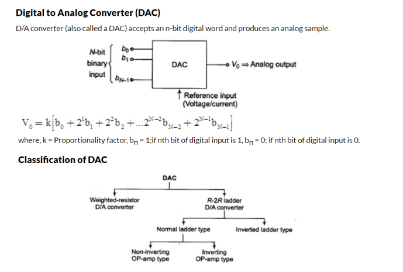
Output Voltage Equation:
$$V_o = k[b_0 + 2^1 b_1 + 2^2 b_2 + ... 2^{N-2} b_{N-2} + 2^{N-1} b_{N-1}]$$
where, $k$ = Proportionality factor, $b_n = 1$ if nth bit of digital input is 1, $b_n = 0$ if nth bit of digital input is 0.
3. Weighted Resistor DAC (N-bit)
- A DAC can be constructed by using a Summing Amplifier and a set of resistors R, 2R, 4R, 8R, etc as its inputs.
- The circuit consists of a reference voltage $V_f$, N binary-weighted resistors $\mathbf{R, 2R, 4R, 8R, \dots, 2^{(N-1)} R}$, N single-pole double-throw switches, and an Op-amp together with its feedback resistance $R_f = R/2$.
- The switches are controlled by an N-bit digital input word D.
$$D = \frac{b_1}{2^1} + \frac{b_2}{2^2} + \dots + \frac{b_N}{2^N}$$
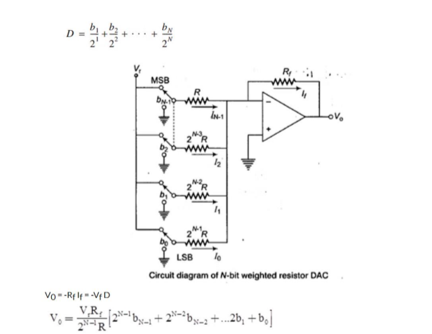
$$V_o = -R_f I_f = -V_f D$$
$$V_o = \frac{V_r R_f}{2^{N-1} R} [2^{N-1} b_{N-1} + 2^{N-2} b_{N-2} + \dots 2b_1 + b_0]$$
LSB resistance = $(2^N - 1)$ MSB resistance.
- The accuracy of the DAC depends critically on the accuracy of the Reference voltage, the precision of the binary-weighted resistors, and the perfection of the switches.
- A disadvantage of the binary-weighted resistor network is that for a large number of bits (N > 4) the spread between the smallest and largest resistances becomes quite large. This implies difficulties in maintaining accuracy in resistor values.
R-2R Ladder DAC & Counter ADC
Exploring the R-2R ladder architectures and the Counter type ADC.
1. Inverting Amplifier using R-2R Ladder
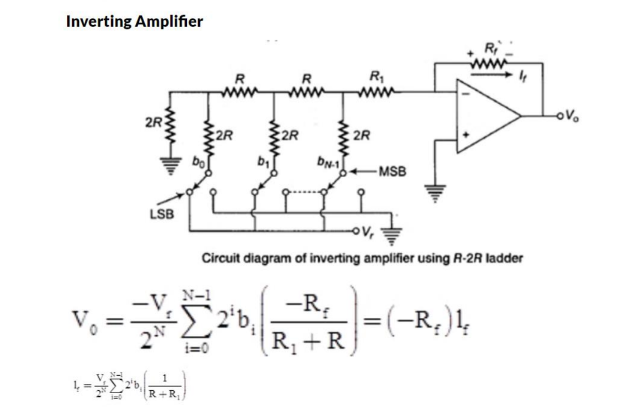
Key Formulas:
$$I_f = \frac{V_r}{2^N} \sum_{i=0}^{N-1} 2^i b_i \left( \frac{1}{R + R_1} \right)$$
$$V_o = \frac{-V_r}{2^N} \sum_{i=0}^{N-1} 2^i b_i \left( \frac{-R_f}{R_1 + R} \right) = (-R_f) I_f$$
2. Inverted Ladder R-2R Circuit
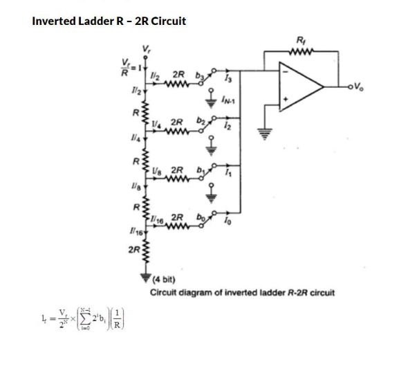
$$I_f = \frac{V_r}{2^N} \left( \sum_{i=0}^{N-1} 2^i b_i \right) \left( \frac{1}{R} \right)$$
$$V_o = (-R_f) I_f = \frac{V_r}{2^N} \times \left( \sum_{i=0}^{N-1} 2^i b_i \right) \left( \frac{-R_f}{R} \right)$$
3. Specifications for DAC
- Resolution: Changed in analog output with corresponding to 1 LSB bit increment at the input.
Resolution = weight of LSB = $\frac{V_r}{2^N - 1}$
(For R-2R ladder type: Resolution = $\frac{V_r}{2^N}$) - Analog Output: Analog output = resolution $\times$ decimal equivalent of binary data
- Maximum Analog Output Voltage ($V_{FS}$): $V_{FS}$ is the maximum analog output voltage of DAC.
$$V_{FS} = \frac{V_r}{2^N - 1} \times (2^N - 1) = V_r$$ - Percentage Resolution: $\%R = \frac{1}{2^N - 1} \times 100$
- Maximum Error: Maximum error acceptable in ADC and DAC equals to resolution.
4. Analog to Digital Converter (ADC)
- A/D converter (also called an ADC) accepts an analog sample $V_A$ and produces an N-bit digital word.
- Examples of ADC usage are digital volt meters, cell phone, thermocouples, and a digital oscilloscope.
- Types of A/D Converters: Dual Slope A/D Converter, Successive Approximation A/D Converter, Flash A/D Converter, Delta-Sigma A/D Converter, etc.
Counter Type ADC
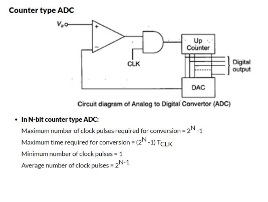
In N-bit counter type ADC:
- Maximum number of clock pulses required for conversion = $2^N - 1$
- Maximum time required for conversion = $(2^N - 1) T_{CLK}$
- Minimum number of clock pulses = $1$
- Average number of clock pulses = $2^{N-1}$
SAR, Flash & Dual Slope ADCs
An overview of Successive Approximation, Flash, and Dual Slope Integrating ADCs.
1. Successive Approximation Type ADC
- It is faster than digital ramp ADC.
- Conversion time ($t_c$) is independent of the value of the analog input voltage ($V_a$).
- It has a fixed conversion time.
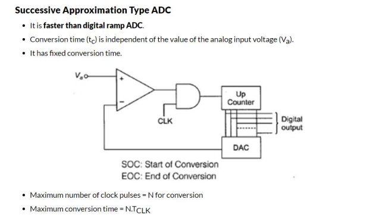
SOC: Start of Conversion
EOC: End of Conversion
- Maximum number of clock pulses = $N$ for conversion
- Maximum conversion time = $N \cdot T_{CLK}$
2. Flash Type ADC
- It is also known as Parallel-comparator type ADC or Simultaneous converter.
- It is the highest speed ADC (fastest ADC).
- It utilizes $2^N - 1$ comparators to compare the input signal level with each of the $2^N - 1$ possible quantization levels.
- The outputs of the comparators are processed by an encoding-logic block to provide the $N$ bits of the output digital word.
- Complete conversion can be obtained within one clock cycle.
For an N-bit comparator:
- Total number of comparators = $2^N - 1$
- Total number of resistors = $2^N$
- Total number of priority encoders = 1 (typically a $2^N \times N$ encoder)
2-bit Flash Converter
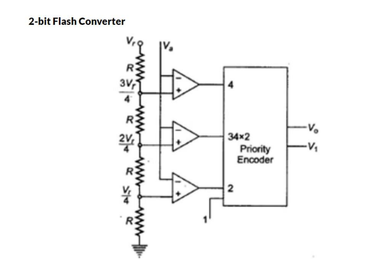
3. Dual Slope Integrating Type ADC
- It has the slowest conversion time but has relatively low cost.
- The following components are present in the Dual slope A/D converter: Integrator, Electronically Controlled Switches, Counter, Clock, Control Logic, and Comparator.
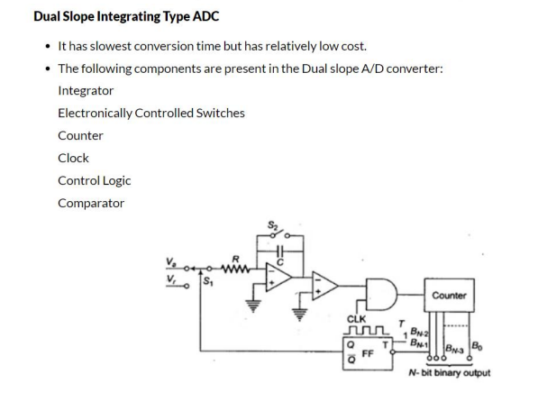
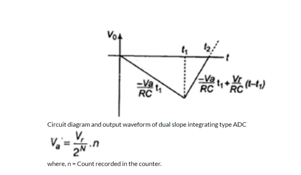
$$V_a' = \frac{V_r}{2^N} \cdot n$$
where $n$ = Count recorded in the counter.
ADC & DAC Cheat Sheet
A quick reference distribution worktree for Data Converters.
Digital to Analog Converters (DACs)
Analog to Digital Converters (ADCs)
🧠 Conceptual Memory Table: How to Remember ADCs & DACs
Stop memorizing. Understand the algorithm each converter uses to reach its output.
| Converter Type | The Logic / Step-by-Step Algorithm | The "Why" (Reasoning) | State Progression (Example: 4-bit) | Detailed Trace (Target: 11V ↔ 1011, LSB=1V) |
|---|---|---|---|---|
| Flash ADC (Brute Force) |
Step 1: Compare the analog signal against ALL possible voltage levels simultaneously using $2^N-1$ comparators. Next Step: Dump all outputs into a priority encoder to get the binary string instantly. |
It's the fastest because it doesn't "search"—it just looks at everything at once. The tradeoff? Massive hardware (e.g., an 8-bit Flash needs 255 comparators). | Unknown → 1011 (Instantly mapped in 1 clock pulse) |
• $V_{in} = 11V$ • All 15 comparators trigger simultaneously. • Comparators 1-11 output HIGH ($11V \geq 1...11V$). • Comparators 12-15 output LOW ($11V < 12V$). • Priority Encoder reads the highest active line (line 11). • Outputs binary 1011 instantly. |
| SAR ADC (Binary Search) |
Step 1: Guess the middle (MSB = 1, e.g., 1000). Next Step: Is the guess too high? If yes, change it to 0. If no, keep it 1. Then guess the next bit down. Repeat for $N$ bits. |
Like playing "Guess the Number" using binary search. It takes exactly $N$ clock pulses no matter what the input is. Perfect balance of speed and hardware. | 1000 (Guess 8) 1100 (Too low, keep 1, guess 4) 1010 (Too high, set to 0, guess 2) 1011 (Final result: 11) |
• T1: Guess 1000. Internal DAC=8V. Is $11V \geq 8V$? Yes. Keep 1. • T2: Guess 1100. Internal DAC=12V. Is $11V \geq 12V$? No. Toss it (0). • T3: Guess 1010. Internal DAC=10V. Is $11V \geq 10V$? Yes. Keep 1. • T4: Guess 1011. Internal DAC=11V. Is $11V \geq 11V$? Yes. Keep 1. • Done in exactly 4 clocks. Output: 1011. |
| Counter/Ramp ADC (Linear Search) |
Step 1: Start counter at 0000. Next Step: Increment counter +1... +1... +1... until the internal DAC voltage matches the analog input, then stop. |
Like pouring water into a measuring cup drop by drop until it's full. Simple, but slow for high numbers. Time taken depends directly on how big the analog input is. | 0000 0001 0010 0011... 1011 (Matches, Stop) |
• T1: Count=0001, DAC=1V. $1V < 11V$, keep counting. • T2: Count=0010, DAC=2V. $2V < 11V$, keep counting. • ... (Skipping 3 through 10) ... • T11: Count=1011, DAC=11V. $11V = 11V$. Comparator trips! • Counter halts and locks at 1011. |
| Dual Slope ADC (The Integrator) |
Step 1: Charge a capacitor using the unknown analog input for a fixed time. Next Step: Discharge it using a known reference voltage and measure how long it takes to reach zero. |
By integrating (charging/discharging), it averages out noise brilliantly. It's the slowest, but highly accurate. Great for digital multimeters. | 0000 → 1111 (Charge phase) 0000 → ... (Start discharge) ... → 1011 (Hits zero, Stop) |
• Ramp Up: Capacitor charges with $V_{in} = 11V$ for a fixed time (e.g., $2^4 = 16$ clocks). Final charge is proportional to 11V. • Ramp Down: Switch connects to $V_{ref} = -15V$ to discharge the capacitor back to 0V. • Because the initial charge was proportional to 11, it takes exactly 11 clock cycles to hit 0V. • The digital counter counted 11 cycles $\rightarrow$ 1011. |
| Weighted Resistor DAC (Direct Ohms Law) |
Each bit is connected to a resistor. The MSB connects to $R$. The next bit to $2R$, then $4R$, etc. Action: Sum all the currents. |
Larger resistance = smaller current. MSB gets the smallest resistor (most current). Hard to manufacture because making a $1M\Omega$ and a $1k\Omega$ resistor on the same chip accurately is tough. | Input: 1011 ↓ Output: 11V instantly (Combinational, no states) |
• Input = 1011 ($b_3 b_2 b_1 b_0$) • MSB ($b_3=1$) connects to $R$. Contributes $8V$. • $b_2=0$ connects to $2R$. Contributes $0V$. • $b_1=1$ connects to $4R$. Contributes $2V$. • LSB ($b_0=1$) connects to $8R$. Contributes $1V$. • Op-Amp Sums them: $8V + 0V + 2V + 1V =$ 11V. |
| R-2R Ladder DAC (Current Divider) |
Builds a repeating network using only two values: $R$ and $2R$. Action: Current splits in half perfectly at every single node down the ladder. |
Eliminates the need for a wide spread of resistors. Since current halves at every node naturally, it perfectly mimics binary weighting ($1/2$, $1/4$, $1/8$) using just two resistor types. Easy to fabricate! | Input: 1011 ↓ Output: 11V instantly (Combinational, no states) |
• Input = 1011. Total available equivalent $= 15V$. • Current splits in half at every single node: • MSB ($b_3=1$) routes $1/2$ total current $\rightarrow 8V$. • $b_2=0$ routes $1/4$ total current to ground $\rightarrow 0V$. • $b_1=1$ routes $1/8$ total current $\rightarrow 2V$. • LSB ($b_0=1$) routes $1/16$ total current $\rightarrow 1V$. • Total combined at Op-Amp $= 8 + 2 + 1 =$ 11V. |
GATE Practice Numericals: ADCs & DACs
Test your understanding with these previous year GATE questions.
Question 1 (GATE EC 2025)
A 10-bit analog-to-digital converter (ADC) has a sampling frequency of 1 MHz and a full scale voltage of 3.3 V. For an input sinusoidal signal with frequency 500 kHz, the maximum SNR (in dB, rounded off to two decimal places) and the data rate (in Mbps) at the output of the ADC are __________, respectively.
- A) 61.96 and 10
- B) 61.96 and 5
- C) 33.36 and 10
- D) 33.36 and 5
View Solution (Correct Answer: A)
The maximum SNR for an $n$-bit ADC is given by:
$(SNR)_{dB} = 6.02 \times n + 1.76$
For $n = 10$ bits:
$= 6.02 \times 10 + 1.76 = 61.96 \text{ dB}$
The sampling frequency is 1 MHz and each sample is converted into 10 bits. So, the data rate is:
$= 10 \text{ bits/sample} \times 1 \text{ M samples/sec} = 10 \text{ Mbps}$
Question 2 (GATE EC 2025)
A 4-bit weighted-resistor DAC with inputs $b_3, b_2, b_1, b_0$ (MSB to LSB) is designed using an ideal opamp, as shown below. The switches are closed when the corresponding input bits are logic '1' and open otherwise. When the input $b_3 b_2 b_1 b_0$ changes from 1110 to 1101, the magnitude of the change in the output voltage $V_O$ (in mV, rounded off to the nearest integer) is __________.
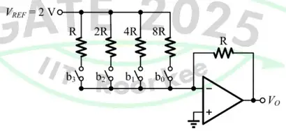
View Solution (Correct Answer: 250)
The output voltage for the inverting weighted-resistor DAC is:
$V_O = -V_{REF} \times R \left( \frac{b_3}{R} + \frac{b_2}{2R} + \frac{b_1}{4R} + \frac{b_0}{8R} \right)$
$V_O = -V_{REF} \left( b_3 + \frac{b_2}{2} + \frac{b_1}{4} + \frac{b_0}{8} \right)$
For input 1110:
$V_O = -2 \times (1 + 0.5 + 0.25 + 0) = -3.5 \text{ V}$
For input 1101:
$V_O = -2 \times (1 + 0.5 + 0 + 0.125) = -3.25 \text{ V}$
Change in Magnitude: $|-3.5 \text{ V} - (-3.25 \text{ V})| = 0.25 \text{ V} = 250 \text{ mV}$
Question 3 (GATE EC 2024)
A full scale sinusoidal signal is applied to a 10-bit ADC. The fundamental signal component in the ADC output has a normalized power of $1 \text{ W}$, and the total noise and distortion normalized power is $10 \mu\text{W}$. The effective number of bits (rounded off to the nearest integer) of the ADC is ____
- A) 7
- B) 8
- C) 9
- D) 10
View Solution (Correct Answer: B)
Signal-to-Noise Ratio (SNR):
$\frac{S}{N_q} = \frac{1}{10 \times 10^{-6}} = 10^5$
In decibels (dB):
$(SNR)_{dB} = 10 \log_{10}(10^5) = 50 \text{ dB}$
Using the SNR formula to find the effective number of bits ($n$):
$1.76 + 6.02n = 50 \implies 6.02n = 48.24 \implies n = 8.01$
Rounded off to the nearest integer: 8 bits.
Question 4 (GATE EC 2022)
Consider the circuit shown with an ideal OPAMP. The output voltage $V_o$ is __________V (rounded off to two decimal places).
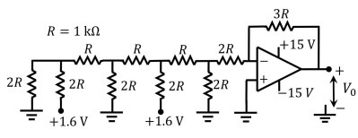
View Solution (Correct Answer: -0.5 V)
This problem can be solved by progressively finding the Thevenin equivalent voltage and resistance at each node moving rightwards towards the OPAMP.
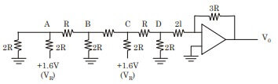
By repeatedly applying the Thevenin equivalence ($V_{th} = \frac{V_1 + V_2}{2}$ when combining two branches of $2R$), you calculate the voltage down the line until the final node feeding into the inverting OPAMP terminal.
$V_D = \frac{5}{16} \times 1.6 \text{ V}$
$V_o = \frac{-3R}{3R} \times \frac{5}{16} \times 1.6 = -0.5 \text{ V}$
Question 5 (GATE EC 2021)
An 8-bit unipolar (all analog output values are positive) digital-to-analog converter (DAC) has a full-scale voltage range from 0V to 7.68V. If the digital input code is 10010110 (the leftmost bit is MSB), then the analog output voltage of the DAC (rounded off to one decimal place) is ___________ V.
View Solution (Correct Answer: 4.5 V)
Given: Full Scale Voltage $V_{FS} = 7.68 \text{ V}$, $n = 8 \text{ bits}$
Resolution step size ($k$):
$k = \frac{V_{FS}}{2^n} = \frac{7.68}{2^8} = \frac{7.68}{256} = 0.03 \text{ V/step}$
Digital Input = $10010110_2$. Decimal equivalent:
$= 128 + 16 + 4 + 2 = 150_{10}$
Analog Output Voltage ($V_{DAC}$):
$V_{DAC} = k \times \text{Decimal Equivalent} = 0.03 \times 150 = 4.5 \text{ V}$
Question 6 (GATE EC 2020)
A 10-bit D/A converter is calibrated over the full range from 0 to 10 V. If the input to the D/A converter is 13A (in hex), the output (rounded off to three decimal places) is _________ V.
View Solution (Correct Answer: 3.069 V)
Given: $n = 10 \text{ bits}$, $V_{FS} = 10 \text{ V}$
Input Voltage Code: $(13A)_{16}$. Convert this hex to decimal:
$= 1 \times 16^2 + 3 \times 16^1 + 10 \times 16^0 = 256 + 48 + 10 = (314)_{10}$
Output Voltage = Resolution $\times$ Decimal Equivalent:
$V_O = \left( \frac{V_{FS}}{2^n - 1} \right) \times 314 = \left( \frac{10}{2^{10} - 1} \right) \times 314$
$V_O = \left( \frac{10}{1023} \right) \times 314 \approx 3.069 \text{ V}$
Question 7 (GATE EC 2016)
In an N bit flash ADC, the analog voltage is fed simultaneously to $2^N-1$ comparators. The output of the comparators is then encoded to a binary format... Assume that the analog voltage source $V_{in}$ has a source resistance of $75 \Omega$ as shown in the circuit diagram below and the input capacitance of each comparator is $8 \text{ pF}$. The input must settle to an accuracy of 1/2 LSB even for a full scale input change for proper conversion. Assume that the time taken by the thermometer to binary encoder is negligible.
If the flash ADC has 8 bit resolution, which one of the following alternatives is closest to the maximum sampling rate?
- A) 1 megasamples per second
- B) 6 megasamples per second
- C) 64 megasamples per second
- D) 256 megasamples per second
View Solution (Correct Answer: A)
For an $N=8$ bit flash ADC, the number of comparators is $2^8 - 1 = 255$.
Since all comparators are in parallel, the total equivalent input capacitance $C_{eq}$ is:
$C_{eq} = 255 \times 8 \text{ pF} = 2040 \text{ pF}$
The time constant of the RC circuit is:
$\tau = R_{source} \times C_{eq} = 75 \Omega \times 2040 \times 10^{-12} \text{ F} = 153 \text{ ns}$
The voltage on the capacitor during a step response is $V_c(t) = V_{in}(1 - e^{-t/\tau})$. The error is $V_{in} e^{-t/\tau}$. The requirement is to settle to within 1/2 LSB. Since 1 LSB $= V_{in} / 2^N$, we need the error to be less than $V_{in} / 2^{N+1}$:
$e^{-t/\tau} \leq \frac{1}{2^{8+1}} = \frac{1}{512}$
$t \geq \tau \ln(512) = 153 \text{ ns} \times 6.238 \approx 954 \text{ ns}$
The maximum sampling rate is the inverse of this settling time:
$f_{max} = \frac{1}{954 \times 10^{-9} \text{ s}} \approx 1.048 \text{ MHz}$
The closest answer is 1 megasamples per second.
Question 8 (GATE EC 2015)
Consider a four bit D to A converter. The analog value corresponding to digital signals of values 0000 and 0001 are 0 V and 0.0625 V respectively. The analog value (in Volts) corresponding to the digital signal 1111 is ________.
View Solution (Correct Answer: 0.9375 V)
From the given data, a digital change from 0000 to 0001 corresponds to an analog change of 0.0625 V. This is exactly 1 LSB (the step size).
$\text{Step Size} = 0.0625 \text{ V}$
The digital signal 1111 is the maximum 4-bit value, whose decimal equivalent is:
$1111_2 = 15_{10}$
The analog output for 1111 is:
$\text{Analog Output} = 15 \times 0.0625 \text{ V} = 0.9375 \text{ Volts}$
Question 9 (GATE EC 2011)
The output of a 3-stage Johnson (twisted ring) counter is fed to a digital-to-analog (D/A) converter as shown in the figure below. Assume all the states of the counter to be unset initially. The waveform which represents the D/A converter output $v_o$ is
- A) Option A
- B) Option B
- C) Option C
- D) Option D
View Solution (Correct Answer: A)
A 3-bit Johnson Counter starting from 000 has the following state progression ($Q_2, Q_1, Q_0$):
- 000 → Decimal 0 → $V_o = 0\text{V}$
- 100 → Decimal 4 → $V_o \propto 4$
- 110 → Decimal 6 → $V_o \propto 6$
- 111 → Decimal 7 → $V_o \propto 7$ (Peak)
- 011 → Decimal 3 → $V_o \propto 3$
- 001 → Decimal 1 → $V_o \propto 1$
- 000 → Decimal 0 → Back to start
The DAC output traces these decimal values, creating a staircase that steps up unevenly (0, 4, 6, 7) and then steps down unevenly (7, 3, 1, 0). Waveform A perfectly matches this progression.
Question 10 (GATE EC 2008)
In the following circuit, the comparator output is logic "1" if $V_1 > V_2$ and is logic "0" otherwise. The D/A conversion is done as per the relation:
$V_{DAC} = \sum_{n=0}^{3} 2^{n-1} b_n \text{ Volts}$
where $b_3$ (MSB), $b_2, b_1, b_0$ (LSB) are the counter outputs. The counter starts from the clear state. The magnitude of the error between $V_{DAC}$ and $V_{in}$ at steady state in volts is _______.
- A) 0.2
- B) 0.3
- C) 0.5
- D) 1
View Solution (Correct Answer: B)
The DAC output is given by $V_{DAC} = \sum_{n=0}^{3} 2^{n-1} b_n$:
$V_{DAC} = 2^2 b_3 + 2^1 b_2 + 2^0 b_1 + 2^{-1} b_0$
$V_{DAC} = 4 b_3 + 2 b_2 + 1 b_1 + 0.5 b_0$
This means the LSB (step size) is exactly $0.5 \text{ V}$.
The up-counter increments, raising $V_{DAC}$ in $0.5 \text{ V}$ steps: 0V, 0.5V, 1.0V... until $V_{DAC} > V_{in}$.
Since $V_{in} = 6.2 \text{ V}$, the counter will reach decimal 12 ($V_{DAC} = 6.0 \text{ V}$), which is still $< 6.2 \text{ V}$.
It increments once more to decimal 13 ($V_{DAC} = 6.5 \text{ V}$). Now $V_{DAC} > V_{in}$. The comparator outputs "0", the AND gate closes, and the counter stops.
Steady State Error:
$\text{Error} = |V_{DAC} - V_{in}| = |6.5 \text{ V} - 6.2 \text{ V}| = 0.3 \text{ V}$
Question 11 (GATE EC 2008)
In the following circuit, the comparator output is logic "1" if $V_1 > V_2$ and is logic "0" otherwise. The D/A conversion is done as per the relations $V_{DAC} = \sum_{n=0}^{3} 2^{n-1} b_n$ Volts, where $b_3$ (MSB), $b_2, b_1, b_0$ (LSB) are the counter outputs. The counter starts from the clear state. The stable reading of the LED displays is

- A) 6
- B) 7
- C) 12
- D) 13
View Solution (Correct Answer: D)
This is the same circuit from Question 10.
The DAC output is given by $V_{DAC} = \sum_{n=0}^{3} 2^{n-1} b_n$:
$V_{DAC} = 2^2 b_3 + 2^1 b_2 + 2^0 b_1 + 2^{-1} b_0 = 4 b_3 + 2 b_2 + 1 b_1 + 0.5 b_0$
The step size (1 LSB) is exactly $0.5 \text{ V}$.
The counter increments from 0, raising $V_{DAC}$ in $0.5 \text{ V}$ steps.
When the counter reaches 12, $V_{DAC} = 12 \times 0.5\text{V} = 6.0 \text{ V}$, which is still $< V_{in} (6.2\text{V})$.
When the counter reaches 13, $V_{DAC} = 13 \times 0.5\text{V} = 6.5 \text{ V}$.
Now $V_{DAC} > V_{in}$. The comparator outputs "0", the AND gate closes, and the counter stops.
The stable reading of the LED displays the current counter state, which is 13.
Question 12 (GATE EC 2007)
In the Digital-to-Analog converter circuit shown in the figure below, $V_R = 10\text{V}$ and $R = 10\text{K}\Omega$. The voltage $V_o$ is

- A) -0.781 V
- B) -1.562 V
- C) -3.125 V
- D) -6.250 V
View Solution (Correct Answer: C)
In this R-2R ladder, the total resistance seen by the source $V_R$ is exactly $R$.
Total current entering the ladder: $I = \frac{V_R}{R} = \frac{10\text{V}}{10\text{K}\Omega} = 1\text{mA}$.
This current splits in half at every node down the ladder. The branch currents through the $2R$ resistors are: $\frac{I}{2}$ (MSB), $\frac{I}{4}$, $\frac{I}{8}$, and $\frac{I}{16}$ (LSB).
Looking at the schematic, the branches connected to the op-amp's virtual ground are the 2nd and 4th branches (digital input $0101_2$).
The total current entering the inverting terminal is:
$I_{in} = \frac{I}{4} + \frac{I}{16} = \frac{5I}{16}$
Output voltage $V_o$ is determined by the feedback resistor $R$:
$V_o = -R \times I_{in} = -R \times \left(\frac{5I}{16}\right)$
$V_o = -10\text{K}\Omega \times \left( \frac{5 \times 1\text{mA}}{16} \right) = \frac{-50}{16}\text{V} = -3.125\text{V}$
Question 13 (GATE EC 2007)
In the Digital-to-Analog converter circuit shown in the figure below, $V_R = 10\text{V}$ and $R = 10\text{K}\Omega$. The current $i$ is
- A) 31.25 $\mu$A
- B) 62.5 $\mu$A
- C) 125 $\mu$A
- D) 250 $\mu$A
View Solution (Correct Answer: B)
By repeatedly solving the equivalent resistance of the R-2R ladder from right to left, we can prove the total resistance seen by the voltage source is $R$.
The total current supplied by $V_R$ is $I = \frac{V_R}{R} = \frac{10\text{V}}{10\text{K}\Omega} = 1\text{mA}$.
At each node down the ladder, the current divides exactly in half because it always sees $2R$ to ground and $2R$ looking further down the ladder.
The current $i$ is at the very last branch (the LSB for a 4-bit ladder), which is the 4th split:
$i = \frac{I}{16} = \frac{1\text{mA}}{16} = 0.0625\text{mA} = 62.5\mu\text{A}$
Question 14 (GATE EC 2006)
A 4-bit D/A converter is connected to a free-running 3-bit UP counter, as shown in the following figure. Which of the following waveforms will be observed at $v_o$?
- A) Option A
- B) Option B
- C) Option C
- D) Option D
View Solution (Correct Answer: A)
The 3-bit up counter generates values ($Q_2 Q_1 Q_0$) from $000$ to $111$.
These outputs are wired to the 4-bit DAC inputs ($D_3 D_2 D_1 D_0$) such that:
- $D_3$ is connected to $Q_2$
- $D_2$ is tied to Ground ($0$)
- $D_1$ is connected to $Q_1$
- $D_0$ is connected to $Q_0$
- Note: In some interpretations of the block diagram, $Q_2$ also connects to $D_0$, but based on the accepted solution progression, the inputs map exactly to $D = (Q_2)(0)(Q_1)(Q_0)$.
Let's map the states:
- $000 \rightarrow 0000_2 = 0$
- $001 \rightarrow 0001_2 = 1$
- $010 \rightarrow 0010_2 = 2$
- $011 \rightarrow 0011_2 = 3$
- $100 \rightarrow 1000_2 = 8$ (Big jump because MSB $Q_2$ turns on $D_3$)
- $101 \rightarrow 1001_2 = 9$
- $110 \rightarrow 1010_2 = 10$
- $111 \rightarrow 1011_2 = 11$
The output creates a small 4-step staircase (0 to 3), then a large vertical gap, followed by another small 4-step staircase higher up (8 to 11), before dropping back to 0. This perfectly matches Waveform A.
Question 15 (GATE EC 2004)
A digital system is required to amplify a binary-encoded audio signal. The user should be able to control the gain of the amplifier from minimum to a maximum in 100 increments. The minimum number of bits required to encode, in straight binary, is
- A) 8
- B) 6
- C) 5
- D) 7
View Solution (Correct Answer: D)
To control the gain in 100 increments, the binary representation must have at least 100 unique states.
The number of states for $n$ bits is $2^n$.
$2^n \geq 100$
Since $2^6 = 64$ (too small) and $2^7 = 128$ (sufficient), the minimum number of bits $n$ required is 7.
Question 16 (GATE EC 2003)
The circuit shown in the figure is a 4 bit DAC. The input bits 0 and 1 are represented by 0 and 5 V respectively. The OP AMP is ideal, but all the resistance and the 5 v inputs have a tolerance of $\pm 10\%$. The specification (rounded to nearest multiple of 5%) for the tolerance of the DAC is
- A) $\pm 35\%$
- B) $\pm 20\%$
- C) $\pm 10\%$
- D) $\pm 5\%$
View Solution (Correct Answer: A)
The output voltage for this inverting summing amplifier (DAC) is:
$V_0 = -V_R \cdot \left[ \frac{d_3 \cdot R_f}{R} + \frac{d_2 \cdot R_f}{2R} + \frac{d_1 \cdot R_f}{4R} + \frac{d_0 \cdot R_f}{8R} \right]$
Since the feedback resistor $R_f = R$, the equation simplifies to:
$V_0 = -V_R \cdot \frac{R}{R} [\text{constant}]$
To find the worst-case tolerance, we assume maximum positive error in the numerator and maximum negative error in the denominator.
Since $V_R$, $R_f$ (numerator), and $R$ (denominator) all have a $\pm 10\%$ tolerance, the worst-case multiplier is:
$V_{0(\text{worst})} = \frac{1.1 \times 1.1}{0.9} = \frac{1.21}{0.9} = 1.3444$
This corresponds to a $+34.44\%$ deviation. Rounding to the nearest multiple of $5\%$, the tolerance is $\pm 35\%$.
Question 17 (GATE EC 2003)
The minimum number of comparators required to build an 8-bits flash ADC is
- A) 8
- B) 63
- C) 255
- D) 256
View Solution (Correct Answer: C)
The number of comparators required for an $n$-bit flash ADC is $2^n - 1$.
For $n = 8$:
$\text{Comparators} = 2^8 - 1 = 256 - 1 = 255$
Question 18 (GATE EC 2002)
The number of comparators required in a 3-bit comparator type ADC is
- A) 2
- B) 3
- C) 7
- D) 8
View Solution (Correct Answer: C)
A "comparator type" ADC is simply another name for a Flash ADC.
The number of comparators required for an $n$-bit flash ADC is $2^n - 1$.
For $n = 3$:
$\text{Comparators} = 2^3 - 1 = 8 - 1 = 7$